|
MFC
Exascale flow solver
|
|
MFC
Exascale flow solver
|
References:
P. J. Martínez Ferrer, R. Buttay, G. Lehnasch, and A. Mura, “A detailed verification procedure for compressible reactive multicomponent Navier–Stokes solvers”, Computers & Fluids, vol. 89, pp. 88–110, Jan. 2014. Accessed: Oct. 13, 2024. [Online]. Available: https://doi.org/10.1016/j.compfluid.2013.10.014
H. Chen, C. Si, Y. Wu, H. Hu, and Y. Zhu, “Numerical investigation of the effect of equivalence ratio on the propagation characteristics and performance of rotating detonation engine”, Int. J. Hydrogen Energy, Mar. 2023. Accessed: Oct. 13, 2024. [Online]. Available: https://doi.org/10.1016/j.ijhydene.2023.03.190
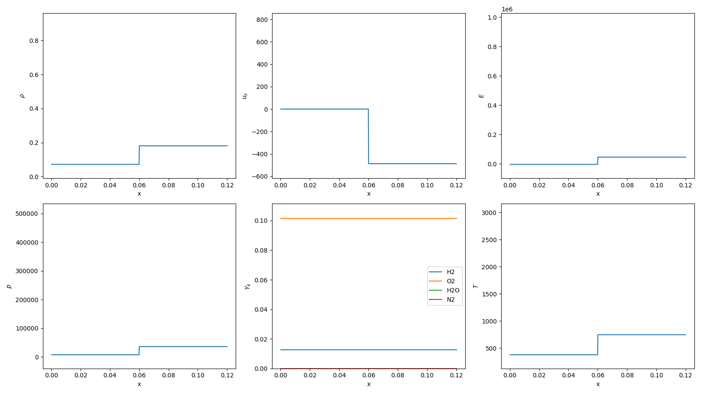
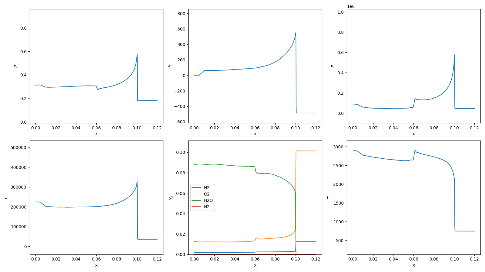
compare_reference.py compares the temperature at 170, 190 and 230 us with the curves of Fig. 4.9 of the thesis of Martinez Ferrer (2013), which treats this case (ref_T.txt: read from the vector figure; the thesis uses the Kee et al. (1993) mechanism, not h2o2.yaml). Save every 5 us:
./mfc.sh run examples/1D_reactive_shocktube/case.py -t pre_process simulation post_process -n 1 -- --t_save_us 5 python3 examples/1D_reactive_shocktube/compare_reference.py examples/1D_reactive_shocktube
case.py also takes --substeps (chem_paramsreaction_substeps, default 4) and --scale. At 401 cells the leading shock is at 43.16, 58.76 and 100.62 mm (reference 43.25, 59.81, 99.89), and the burnt gas is about 100 K hotter than the reference. See Gas-phase chemistry.
A square of dense, high-pressure gas (rho = p = 2 in a background of 1, uniform flow (0.5, 0.25)) in a periodic unit box with two refined 2:1 levels that regrid every few steps. The density jump advects; the pressure jump sends shocks and rarefactions across block edges and the periodic boundaries. With periodic boundaries nothing enters or leaves, so the total mass, momentum and energy must stay at their initial values to round-off. case.py uses mapped WENO5, HLLC and SSP-RK3; the square's edges lie on base-grid faces, so the blocks start from exactly the level-0 state.
./mfc.sh run examples/2D_amr_conservation/case.py -t pre_process simulation -n 1 -- --subcycle python3 examples/2D_amr_conservation/check_conservation.py examples/2D_amr_conservation
The checkers import mfc.viz, so run them in MFC's Python environment (source build/venv/bin/activate after any ./mfc.sh command).
case.py takes -N (base cells per side, default 64), --levels (default 2), --subcycle, --steps (default: to t = 0.4) and --saves. check_conservation.py reads the serial restart files of every save and prints the relative drift (S(t) - S(0))/S(0) of each total, summed exactly (math.fsum), and the gap between the level-0 totals and the totals over the composite grid (leaf cells of every level, from amr_fine.dat). It exits 1 if any drift exceeds --tol (1e-13).
Measured on master after #2482, #2474 and #2461, AMD flang on a Frontier CPU node, double precision, 64^2 base, t = 0.4 (up to 52544 refined cells):
| Mode | mass | x-momentum | y-momentum | energy | level 0 - composite |
|---|---|---|---|---|---|
| lock-step, 684 steps | -6.6e-16 | 0 | 0 | -1.6e-16 | 4.4e-16 |
| subcycled, 172 steps | 0 | 0 | +2.2e-16 | +1.6e-16 | 2.2e-16 |
The largest drift over the four saves is one to three units in the last place of the totals.
The suite registers AMR -> 2D -> Example -> conservation subcycle (32^2 base, 40 steps). Results and limits: Adaptive mesh refinement.
Reference:
Hillewaert, K. (2013). TestCase C3.5 - DNS of the transition of the Taylor-Green vortex, Re=1600 - Introduction and result summary. 2nd International Workshop on high-order methods for CFD.
This figure shows the isosurface with zero q-criterion.
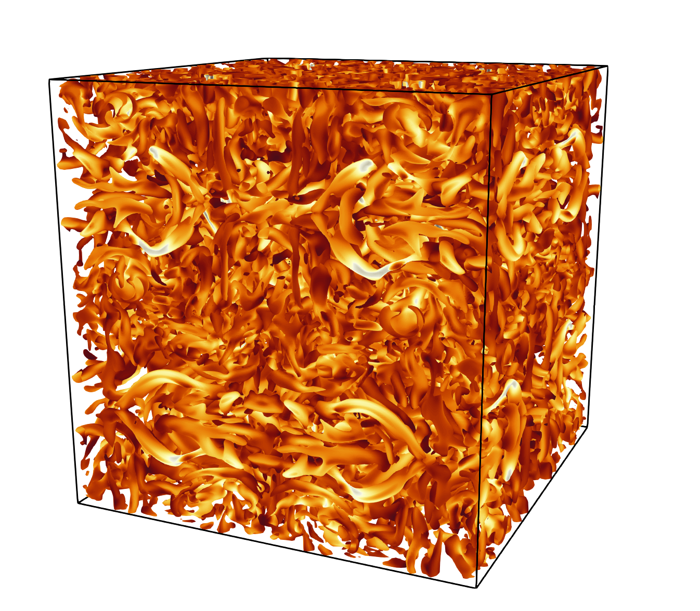
A water disk (stiffened gas, pi_inf 1e9 Pa, 1000 kg/m^3) in air (1 kg/m^3), both at 1e5 Pa and u = v = 100 m/s, crosses a periodic unit box once along the diagonal with the 6-equation model. The exact solution keeps p and u uniform and returns the disk to its initial field. check_advection.py prints the largest pressure and velocity disturbance over all saves, the L1 error of the volume fraction per unit interface length and the width of the mixed zone, for one or several grids.
./mfc.sh run examples/2D_advection/case.py -t pre_process simulation post_process -n 1 -- -N 100 python3 examples/2D_advection/check_advection.py examples/2D_advection --case-args "-N 100"
case.py takes -N (cells per direction, default 100), --periods, --cfl (0.4), --saves (20) and --eps (trace volume fraction, 1e-8):
| N | max dp/p0 | max du/U | L1 [cells] | mixed-zone width, initial / final [cells] |
|---|---|---|---|---|
| 50 | 3.7e-11 | 1.1e-11 | 0.066 | 9.17 / 9.25 |
| 100 | 2.5e-11 | 5.6e-12 | 0.095 | 9.18 / 9.26 |
| 200 | 1.5e-10 | 1.9e-10 | 0.142 | 9.16 / 9.54 |
The interface equilibrium holds to round-off at every grid. The deck runs with mpp_lim = F: the volume-fraction clip of mpp_lim is not matched by the energy, so where a trace fraction undershoots it shifts the water pressure (to 2.5e-3 p0 at 50 cells, 3e-6 at 100; #2476). Measured on the CPU with NVHPC 25.11 (four ranks); an NVIDIA A100 (NVHPC 25.5) gives 3.8e-11 and 3.4e-11 at N = 50 and 100. The example is not in the test suite. See Validation: Two-Fluid Shock Tube, Interface Advection and Phase-Change Equilibrium.
A no-slip immersed cylinder in a low-Mach stream (U = 0.2, c = 1, M = 0.2, Re = 100 on the diameter D) sheds a von Karman street. One static 2:1 AMR block covers the body and the near wake (-1.5 D <= x <= 6 D, |y| <= 2.5 D); the rest of the 36 D x 32 D domain (3.1 % blockage) stays at 16 cells per diameter. The case checks that the block reproduces the uniform 32-cells-per-diameter grid in mean drag and shedding frequency, and both against published values. It is also the body-wake row of "When AMR pays" in docs/documentation/amr.md.
./mfc.sh run examples/2D_amr_cylinder_wake/case.py -t pre_process simulation -n 1 --gpu python3 examples/2D_amr_cylinder_wake/check_wake.py examples/2D_amr_cylinder_wake [<uniform fine run>]
Variants are edits at the top of case.py: amr = False gives a uniform grid at N cells per diameter (N = 32 for the uniform fine grid), subcycle = True gives amr_subcycle. dt follows the finest cells and every variant runs to t = 650 (130 D/U). check_wake.py reads D/ib_forces.dat and prints the mean Cd and the Strouhal number over the whole shedding periods in the last 250 time units (--window), with signed errors against Henderson (1995), Park et al. (1998) and Williamson's St(Re) fit, and against a second run directory when one is given. St is from the mean spacing of the upward zero crossings of Cl; an FFT of the same window agrees to 0.2 %.
The case is not in the test suite (a run is 130 D/U long); the AMR immersed-boundary path is covered by amr_golden_tests.
One MI250X GCD (amdflang, OpenMP offload), master at 5838b641c. Window t = 400-650, 8 shedding periods.
| Run | Grid | Cd | St | Cd vs uniform fine | St vs uniform fine |
|---|---|---|---|---|---|
| uniform fine | 1152 x 1024 (32/D) | 1.3687 | 0.1674 | ||
| uniform coarse | 576 x 512 (16/D) | 1.3672 | 0.1647 | -0.11 % | -1.60 % |
| AMR, lock-step | 576 x 512 + block 240 x 160 | 1.3682 | 0.1673 | -0.03 % | -0.03 % |
| AMR, subcycled | same | (1.6970) | 0.1673 | -0.03 % |
With amr_subcycle the force is summed on the coarse faces only: the subcycled Cd is 24 % above the lock-step one and is not a drag measurement; its St, from the same flow, is. Against the references, the uniform fine grid is +1.4 % (Henderson, Cd 1.35) and +2.9 % (Park, 1.33) in Cd and +1.9 % (Williamson, St 0.1643) and +1.5 % (Park, 0.165) in St. On a 24 D x 16 D domain (6.25 % blockage) the same grids gave Cd and St 3 to 4 % higher; the AMR run still matched the uniform fine one (-0.31 %, -0.17 %).
s_open_probe_files appends whenever D/probe*_prim.dat already exists:
That is correct when a run is being continued. It is wrong when one is being started over, which is what happens every time a case is re-run in place after a parameter change. The second run's rows land on top of the first's, nothing in the file marks the join, and the time column simply resets partway down. A reader sees one monotonic series and is silently wrong.
There is no warning, no header and no separator. The two runs need not even share a grid — a case whose resolution changed between runs produces a file whose first half was recorded at different probe locations.
| rows in D/probe1_prim.dat | |
|---|---|
| before | 40 — two runs of 20, spliced |
| after | 20 |
And the time column, read straight through, before the fix:
Append only when continuing: t_step_start > 0, or n_start > 0 under cfl_dt. A fresh start replaces the file, which is what every other output MFC writes already does. s_open_com_files had the same pattern and gets the same treatment.
This produced three separate wrong numbers in one project before it was noticed. The worst was a jet whose probe files held a t = 15 run of 4,962 rows followed by a t = 40 run of 13,233 — on different grids. Read together they manufactured a velocity drop of 0.99 U_j in a single sample, which was time running backwards at the seam and was diagnosed as a physical instability first.
A related symptom is louder and easier to spot: if the probe output format changes between runs, the column count changes partway down the file and numpy.loadtxt refuses it outright ("the number of columns changed from 11 to 18"). That one at least announces itself. The time reset does not.
Validates the power-law term of MFC's Herschel-Bulkley non-Newtonian viscosity against a closed-form analytic Poiseuille profile, in the shear-**thickening** regime (nn > 1): the velocity profile is more pointed (sharper-topped) than a parabola. Companion to examples/2D_poiseuille_nn (shear-thinning, nn = 0.7).
Single Papanastasiou-regularized Herschel-Bulkley fluid with no yield stress (tau0 = 0), so the effective viscosity is the pure power law mu = K*gamma_dot^(n-1), clamped to [mu_min, mu_max]:
| Parameter | Value | Role |
|---|---|---|
| fluid_pp(1)K | 5.0e-2 | consistency index |
| fluid_pp(1)nn | 1.5 | flow index > 1 -> shear-thickening |
| fluid_pp(1)tau0 | 0.0 | no yield stress (pure power law) |
| fluid_pp(1)hb_m | 1000.0 | Papanastasiou regularization parameter |
| fluid_pp(1)mu_min/mu_max | 1e-6 / 0.035 | viscosity clamp |
Driven by a constant body acceleration g_x = 5e-2, rho = 1, pres = 10 (sound speed ~3.74), giving u_max ~ 0.013 and Mach ~3e-3 (effectively incompressible). Channel L_y = 0.2, half-height H = L_y/2 = 0.1, no-slip walls at y = 0, L_y, periodic in x. Grid m = 24 (x), n = 63 (y).
For n > 1 the maximum physical viscosity is at the wall (highest shear rate), mu_wall = K^(1/n) * (rho*g*H)^((n-1)/n) = 0.0232. mu_max = 0.035 ~ 1.5*mu_wall sits just above that maximum, so the clamp never activates (the analytic profile stays exact everywhere) while keeping the explicit viscous timestep large — the timestep scales as 1/mu_max, so set mu_max just above the physical maximum viscosity.
Fully-developed steady channel flow balances the body force against the shear stress, tau = rho*g*(H - y). With tau = K*|du/dy|^n (power law) the closed form is
u(y) = (n/(n+1)) * (rho*g/K)^(1/n) * ( H^((n+1)/n) - |y - H|^((n+1)/n) )
(n < 1 blunt/flat-topped; n = 1 parabola; n > 1 pointed). For n > 1 the effective viscosity mu = K*gamma_dot^(n-1) -> 0 at the shear-free centerline (rather than diverging as for n < 1), so no regularization cap is needed and the analytic profile is an exact reference everywhere.
./mfc.sh run examples/2D_poiseuille_thickening_nn/case.py -n 2 python examples/2D_poiseuille_thickening_nn/compare_analytic.py
The run reaches t_stop = 0.9 (~2 wall-viscous diffusion times) in ~1 min on 2 CPU ranks with dt = 8.4e-5.
Relative L2 error vs. the analytic power-law profile: 1.46% (2-rank run, steady-state drift between the last two saves 3.9e-3). The local momentum balance K*|du/dy|^n = rho*g*(H-y) holds to ~1.4% across the channel, and the profile bluntness (mean/peak = 0.626) matches the n = 1.5 theory (n+1)/(2n+1) = 0.625, confirming the pointed shear-thickening profile. u_max = 1.288e-2 matches the analytic 1.291e-2, confirming the clamp stays inactive.
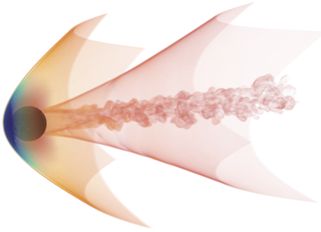
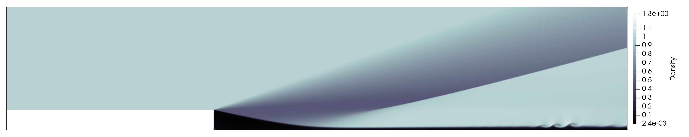
Steady conduction between two isothermal immersed boundaries: a circle (radius R, wall temperature T1 = 2) inside a flat ring read from ring.stl whose inner edge is the circle r = 2R (wall temperature T2 = 3). The gas is quiescent with constant conductivity (k_therm = 0.1, cv = 1, gamma = 1.4, nondimensional), so the steady temperature is exactly
T(r) = T1 + (T2 - T1) ln(r / R) / ln(r2 / R).
The case compares the two image-point weightings of the ghost-cell method: inverse distance (the solver default) and triangular-shaped cloud (ib_ip_interp = 2, TSC). The gas starts from the exact profile on 10 concentric constant shells (uniform pressure) and runs 8 slowest conduction times, so the error that remains is the steady discretization error of the wall condition. check_annulus.py reads the last restart_data/lustre_<k>.dat and prints, relative to T2 - T1:
Signed wall error (MFC - exact) / (T2 - T1), inverse distance (idw) and TSC, 1 rank, 8 conduction times:
| cells / R | idw inner | idw outer | TSC inner | TSC outer |
|---|---|---|---|---|
| 10 | -1.83e-2 | +1.18e-2 | +3.68e-3 | +1.31e-4 |
| 20 | -1.18e-2 | +7.71e-3 | +7.67e-4 | +6.05e-5 |
| 40 | -5.00e-3 | +3.42e-3 | +1.87e-4 | +2.96e-5 |
| observed order 10-20, 20-40 | 0.6, 1.2 | 0.6, 1.2 | 2.3, 2.0 | 1.1, 1.0 |
Whole-gap error of T over the gas cells:
| cells / R | idw L2 | TSC L2 | idw max | TSC max |
|---|---|---|---|---|
| 10 | 9.36e-3 | 1.45e-3 | 4.57e-2 | 2.66e-3 |
| 20 | 5.32e-3 | 3.90e-4 | 1.98e-2 | 8.68e-4 |
| 40 | 2.02e-3 | 1.86e-4 | 8.94e-3 | 3.39e-4 |
Wall-normal gradient error (fit estimate, relative), inner wall: idw -5.0e-3, +2.7e-3, +1.4e-2; TSC -2.3e-2, -5.8e-3, -4.3e-4 at 10, 20, 40 cells/R. The inverse-distance gradient does not converge and TSC converges at about second order on the inner wall; the estimator is a fit through the first cells and is not a reference for the true wall flux.
TSC lowers the imposed wall temperature error by a factor of 5 to 130 and the whole-gap L2 error by a factor of 6 to 14 at these resolutions. The maximum error converges at order 1.2 (inverse distance) and 1.4 to 1.6 (TSC). With inverse distance the wall error order is erratic between 0.6 and 1.2.
./mfc.sh run examples/2D_ibm_conduction_annulus/case.py -n 1 --gpu # inverse distance, 12 cells/R ./mfc.sh run examples/2D_ibm_conduction_annulus/case.py -n 1 --gpu -- --interp 2 --cells_per_R 20 # TSC python3 examples/2D_ibm_conduction_annulus/check_annulus.py examples/2D_ibm_conduction_annulus
case.py takes --cells_per_R (default 12), --interp (1 or 2) and --steps (default: 8 slowest conduction times). The table above uses 10, 20 and 40 cells/R. Single-precision builds write single-precision restart files: pass --dtype float32 to the checker. The suite registers 2D -> IBM -> Conduction Annulus -> Inverse Distance and -> TSC at 12 cells/R and 300 steps (about 3 conduction times). ring.stl is ring_stl.py ring.stl 2 5 1024.
See Isothermal Conduction Annulus: Image-Point Interpolation.
A cylinder of radius 50 um at 300 K (an immersed boundary with thermal_bc = 1) meets quiescent air at 1500 K and 1 atm, as a cold particle meets hot post-shock gas. The gas starts in a near-step conduction layer, so for the first fraction of the heat-diffusion time the wall layer is much thinner than a cell and the ghost-cell wall cannot carry its flux. patch_ib(1)wall_column = T gives each first-layer ghost a one-dimensional conduction column along the wall normal that does. D/ib_heat.dat (ib_heat_wrt) records the heat the body takes every step.
check_heat.py integrates it and compares the heat absorbed, Q(t) per unit depth, with a body-fitted 1D reference (ref1d.py): conduction only, at constant pressure, in the mass coordinate, with the Cantera conductivity and heat capacity of the same frozen air. The results, the model limit and the references are on the Validation: Solid-Wall Thermal Models page.
./mfc.sh run examples/2D_ibm_cold_wall_transient/case.py -t pre_process simulation -n 1 -- --cells_per_R 40 --half 4 --tend 0.1 --wall_column 1 python3 examples/2D_ibm_cold_wall_transient/check_heat.py examples/2D_ibm_cold_wall_transient
--wall_column 0 is the default ghost-cell wall; --tend is in units of R^2/alpha of the hot gas (7.4 us). Each run writes into the example directory, so check it before the next one. Without arguments the case is the CI-sized run (12 cells per R, a box of half width 3 R, to 0.03 R^2/alpha, about 100 steps); the suite runs it as 2D -> Chemistry -> IBM -> Cold Wall Transient -> Wall Column (the golden holds the conservative fields).
GNU 13, one rank, double precision, master at 0cdfdf02a. Error = Q_MFC / Q_ref - 1 at the time in R^2/alpha:
| cells per R | wall | 0.003 | 0.01 | 0.03 | 0.1 |
|---|---|---|---|---|---|
| 10 | ghost mirror | -51.9 % | -33.7 % | -19.7 % | -9.6 % |
| 20 | ghost mirror | -37.5 % | -23.1 % | -12.9 % | -6.1 % |
| 40 | ghost mirror | -20.8 % | -10.3 % | -4.2 % | -1.4 % |
| 10 | wall column | +12.7 % | +6.4 % | +2.5 % | +0.7 % |
| 20 | wall column | +7.1 % | +0.8 % | -1.0 % | -0.4 % |
| 40 | wall column | +6.0 % | -0.3 % | -1.3 % | +0.0 % |
The ghost-cell wall loses most of the heat in the first part of the transient and converges slowly; the column is within 1.3 % of the reference from 0.01 R^2/alpha on at 20 and 40 cells per R. Its excess at the earliest time does not fall with refinement in this range (the column is a low-Mach model; see the page for the likely cause).
The coplanar MHD Riemann problem of Brio and Wu (1988): left $(\rho, p, B_y) = (1, 1, 1)$, right $(0.125, 0.1, -1)$, $B_x = 0.75$, $\gamma = 2$, at rest, on $[0, 1]$ to t = 0.2, WENO5-M, HLLD (1D_brio_wu is the same deck with HLL). The solution has a fast rarefaction, a slow compound wave (an intermediate shock followed by a slow rarefaction), a contact, a slow shock and a fast rarefaction. With the compound wave the Riemann problem has no unique exact solution, so the check has two parts:
./mfc.sh run examples/1D_brio_wu_hlld/case.py -t pre_process simulation post_process -n 1 -- -N 1602 python3 examples/1D_brio_wu_hlld/check_brio_wu.py --ref <run with -N 25632> <run with -N 1602> [--rj]
case.py takes -N (cells, default 801; dt scales with 801/N) and --gamma. The reference's cell count must be an integer multiple of each run's; it is block-averaged onto the coarser grids. Results: Validation: Ideal MHD.
The scaling case can exercise both weak- and strong-scaling. It adjusts itself depending on the number of requested ranks.
This directory also contains a collection of scripts used to test strong and weak scaling on OLCF Frontier.
Pass --scaling weak. The --memory option controls (approximately) how much memory each rank should use, in Gigabytes. The number of cells in each dimension is then adjusted according to the number of requested ranks and an approximation for the relation between cell count and memory usage. The problem size increases linearly with the number of ranks.
Pass --scaling strong. The --memory option controls (approximately) how much memory should be used in total during simulation, across all ranks, in Gigabytes. The problem size remains constant as the number of ranks increases.
For example, to run a weak-scaling test that uses ~4GB of GPU memory per rank on 8 2-rank nodes with case optimization, one could:
A fixed no-slip isothermal cylinder (immersed boundary, thermal_bc = 1) in dry air at Mach 0.2. The case measures four things against literature values: the mean drag coefficient, the steady wake length, the Strouhal number of the shedding wake, and the Nusselt number of a heated wall. The drag is taken two ways that share no code: the face-flux force MFC writes with ib_force_wrt (D/ib_forces.dat), and a momentum balance on squares of half-width 1, 2 and 4 diameters around the body, from the saved fields. Chemistry is on for the thermodynamics and mixture transport only (h2o2.yaml, no fuel, reactions off). The full results and limits are on the Validation: Circular Cylinder Drag and Nusselt Number page.
./mfc.sh run examples/2D_ibm_cylinder_drag_nu/case.py -t pre_process simulation post_process -n 1 --gpu -- \
--silo --Re 40 --cells_per_D 20 --xu 15 --xd 25 --hy 16 --steps 0 --tstar 50
python3 examples/2D_ibm_cylinder_drag_nu/check_cylinder.py examples/2D_ibm_cylinder_drag_nu [--hot <heated run>]
--tw_ratio 1.1 gives the heated twin whose directory goes to --hot (the Nusselt number uses the difference of the two, which removes the viscous heating of the wall). --steps 0 selects the adaptive time step and --tstar the run length in t U / D; Re 100 needs --tstar 120 (periodic shedding is reached by about 90). Without arguments the case is the CI-sized test: Re 20, 16 cells per diameter, a 12 D x 8 D domain, 200 fixed steps. It runs in the suite as 2D -> Chemistry -> IBM -> Cylinder Drag Nu (golden: the force and heat histories and the conserved fields).
AMD MI300A, OpenMP offload, double precision, master at 615348a25; 20 and 10 cells per diameter, domain [-15 D, 25 D] x [-16 D, 16 D] (3 % blockage), ib_ip_interp = 1, adaptive step. Errors are against Dennis & Chang for Re 20 and 40 and Henderson (mean Cd 1.35) for Re 100.
| Re | cells/D | Cd_IB | Cd_CV (2 D) | L/D | Nu |
|---|---|---|---|---|---|
| 20 | 10 | 1.982 | 1.983 | 0.721 | not run |
| 20 | 20 | 2.029 (-1.0 %) | 2.029 | 0.818 (ref 0.94) | 2.442 (Lange +1.4 %) |
| 40 | 10 | 1.500 | 1.498 | 1.932 | not run |
| 40 | 20 | 1.521 (+0.1 %) | 1.519 | 2.064 (ref 2.35) | 3.243 (Lange -1.2 %) |
| 100 | 20 | 1.354 (+0.3 %) | 1.332 | shedding | 4.962 (Lange -3.2 %) |
Re 100 used a smaller domain ([-8 D, 16 D] x [-8 D, 8 D], 6 % blockage) and t U / D = 120: Cl amplitude 0.287 (references 0.33-0.34) and St = 0.1668 (+1.5 % against Williamson's 0.1643). The Re 20 and 40 wakes are steady. Nu is the twin-corrected face-heat value at Tw/T_inf = 1.1, with the film conductivity from Cantera at Pr = 0.712. Not run: 40 cells per diameter (about 5 GPU-hours per run on this domain).
Two limits are visible in the table. L/D is first order and low (the ghost-cell wall sits up to a cell inside the surface), and Cd_CV depends on the box at Re 100 in the smaller domain (1.344, 1.332, 1.302 for 1, 2 and 4 D).
--thermal_bc 3 --rho_cs <J/m^3/K> replaces the isothermal wall by a lumped solid temperature (thermal_bc = 3) that starts at --tw_ratio times the free-stream temperature and relaxes toward the adiabatic-wall temperature. With the two fixed-wall twins (--tw_ratio 1 and 1.1, same Re and grid), check_lumped_cooling.py <lumped run> --cold <cold run> --hot <hot run> --tmin <t U/D> compares the fitted decay with the time constant rho_s c_s D^2 / (4 Nu k_f) that the twins' Nusselt number implies, and the lumped body's heat rate with the twins' law at the same wall temperature. It also prints the booking ratio m c_s dTw/dt / Q and the decay the twins' own linear response predicts without the lumped update (Duhamel); the lumped run follows that prediction, and the gap to the steady-Nusselt time constant is the gas's transient response, about tau_bl/tau with tau_bl about 1 D/U at Re 20. Use --stride 1 for the booking ratio. --parallel_io F is for a build without MPI. The results are on the Validation: Solid-Wall Thermal Models page.
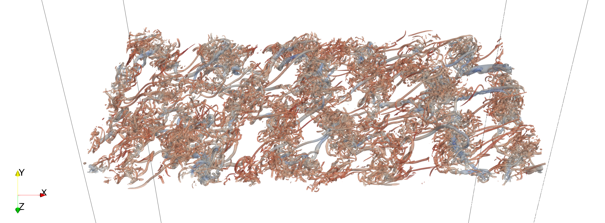
Reference:
G. B. Skinner and G. H. Ringrose, “Ignition Delays of a Hydrogen—Oxygen—Argon Mixture at Relatively Low Temperatures”, J. Chem. Phys., vol. 42, no. 6, pp. 2190–2192, Mar. 1965. Accessed: Oct. 13, 2024.
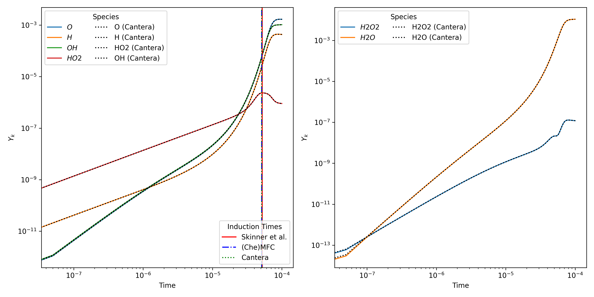
After running the simulation, compare MFC species mass fractions and induction time against a Cantera 0-D ideal-gas reactor reference:
This reads the Silo output, runs an equivalent Cantera reactor, prints the induction times (Skinner et al. / Cantera / (Che)MFC), and saves plots-nD_perfect_reactor-example.png. All dependencies are installed automatically by the MFC toolchain.
Validates the power-law term of MFC's Herschel-Bulkley non-Newtonian viscosity against a closed-form analytic Poiseuille profile. Demonstrates the shear-thinning regime (nn < 1): the velocity profile is blunter (flatter-topped) than a parabola.
Single Papanastasiou-regularized Herschel-Bulkley fluid with no yield stress (tau0 = 0), so the effective viscosity is the pure power law mu = K*gamma_dot^(n-1), clamped to [mu_min, mu_max]:
| Parameter | Value | Role |
|---|---|---|
| fluid_pp(1)K | 2.0e-2 | consistency index |
| fluid_pp(1)nn | 0.7 | flow index < 1 -> shear-thinning |
| fluid_pp(1)tau0 | 0.0 | no yield stress (pure power law) |
| fluid_pp(1)hb_m | 1000.0 | Papanastasiou regularization parameter |
| fluid_pp(1)mu_min/mu_max | 1e-6 / 10.0 | viscosity clamp |
Driven by a constant body acceleration g_x = 8e-2, rho = 1, pres = 10 (sound speed ~3.74), giving u_max ~ 0.011 and Mach ~3e-3 (effectively incompressible). Channel L_y = 0.2, half-height H = L_y/2 = 0.1, no-slip walls at y = 0, L_y, periodic in x.
Fully-developed steady channel flow balances the body force against the shear stress, tau = rho*g*(H - y). With tau = K*|du/dy|^n (power law) the closed form is
u(y) = (n/(n+1)) * (rho*g/K)^(1/n) * ( H^((n+1)/n) - |y - H|^((n+1)/n) )
(n < 1 blunt/flat-topped; n = 1 parabola; n > 1 pointed). For n < 1 the viscosity diverges at the shear-free centerline, so any regularized solver caps it there; the near-wall momentum balance K*|du/dy|^n = rho*g*(H-y) is the cleanest pointwise correctness test and holds regardless of the cap.
./mfc.sh run examples/2D_poiseuille_nn/case.py -n 2 python examples/2D_poiseuille_nn/compare_analytic.py
Relative L2 error vs. the analytic power-law profile: 0.68% (2-rank run, steady state confirmed). The local momentum balance holds to ~0.1% across the channel, and the profile bluntness (mean/peak = 0.706) matches the n = 0.7 theory (n+1)/(2n+1) = 0.708.
A planar acoustic source (acoustic(1)support = 1) at x = 0.1 mm in water (stiffened gas, c = 1492.8 m/s) emits one Gaussian pulse (pulse = 2, $\sigma_t$ = 20 ns, delay 100 ns, mag = 1 Pa) in +x. The source adds $S = \mathrm{mag}\,g(t) f(x)$ to the momentum, $S/c$ to the mass and $S c/(\gamma - 1)$ to the energy, so in linear acoustics only the right-going invariant $p + \rho c u$ is driven and, away from the support,
$$ p'(x, t) = \mathrm{mag} \sum_j f_j \Delta x_j\, g\big(t - t_d - (x - x_j)/c\big), $$
with $f_j$ the discrete Gaussian weights of the support (standard deviation 1.25 $\Delta x_j$).
check_acoustic.py compares the pressure of a save with this expression (by default the last save with the whole signal inside the domain) and prints the relative L2 and max errors outside the support, and the amplitude A and time shift $\tau$ of a least-squares fit $p'\mathrm{MFC} = A\,p'\mathrm{lin}(t + \tau)$. The same script reads the sibling examples 1D_acoustic_gauss_sigmadist, 1D_acoustic_sine_frequency, 1D_acoustic_sine_wavelength and 1D_acoustic_dipole (dipole = T: two pulses of the same sign, one each way).
./mfc.sh run examples/1D_acoustic_gauss_sigmatime/case.py -t pre_process simulation post_process -n 1 python3 examples/1D_acoustic_gauss_sigmatime/check_acoustic.py examples/1D_acoustic_gauss_sigmatime
case.py takes -N (cells; dt and the steps scale with it, c dt/dx = 0.6) and --stretch a_x (a stretched grid clustered on 0.3-0.6 mm). For a sweep, run copies of the directory and pass the case arguments of each run:
python3 check_acoustic.py run200 run400 run800 --case-args "; -N 400; -N 800"
The pulse arrives on time ($|\tau| \le 0.002\,\Delta t$) and the L2 error falls at third order to a floor of about 2e-4 (round-off of the 1 Pa signal on the stiffened-gas energy). The source is evaluated at each Runge-Kutta stage's own time; with the step-start time in every stage the pulse lagged by $\Delta t/2$ and the error was first order (#2462). The full tables are on Validation: Acoustic Sources.
A fixed carbon body (D = 100 um) held at 2000 K gasifies in quiescent moist air at 10 atm and 2000 K, with a CO flame off the surface (the mechanisms of 2D_ibm_reacting_surface: 11-species reduced GRI gas phase and the carbon surface mechanism). The body appears at t = 0 in a box of half-width 6 R with extrapolation faces; the surface chemistry runs with ib_flux_wall and ib_heat_wrt records the burn rate. --ndim 2 is a cylinder, --ndim 3 a sphere. The reference is a 1D transient solution of the same model (ref1d.py: finite volumes with geometric stretching, Cantera thermodynamics, kinetics and mixture-averaged transport, Stefan velocity from the ideal-gas constraint, the wall receiving the surface-solve fluxes); its burn rate and flame peak are tabulated in ref_cylinder.txt and ref_sphere.txt (N = 400 cells, outer radius 200 R).
./mfc.sh run examples/nD_ibm_carbon_burn/case.py -n 1 -t pre_process simulation post_process -- --cells_per_D 24 --tend 6e-5 python3 examples/nD_ibm_carbon_burn/compare_burn_rate.py examples/nD_ibm_carbon_burn python3 examples/nD_ibm_carbon_burn/ref1d.py --geom 1 --tend 6e-5 --out ref_cylinder.txt # regenerates the reference (43 min on one CPU core; it reproduces the shipped table to 5e-7)
compare_burn_rate.py prints the burn rate (D/ib_heat.dat column 4, the face mass the flux wall passes to the gas, and column 3, the surface-solve rate) against the reference at 10, 20, 30 and 60 us, and the flame peak at the last save. case.py takes --ndim, --D, --p_atm, --T, --H_over_R, --cells_per_D, --tend, --frames, --cfl and --set KEY=VAL.
NVIDIA A100 (NVHPC 25.11), error = (MFC - reference)/reference of the burn rate (ib_heat.dat column 4) at 10 and 20 us. "Shared" is master at 0cdfdf02a, which gave all species one ghost mirror weight; "per species" is the current rule (each species its own weight, the most abundant closing the sum). The recommended setting is --set ib_ip_interp=2 (triangular-shaped-cloud image points); the suite test keeps the default.
| Body | cells per D | image points | shared | per species |
|---|---|---|---|---|
| cylinder | 12 | default | +1.87 %, +1.36 % | +1.87 %, +1.35 % |
| cylinder | 12 | ib_ip_interp=2 | +1.39 %, +0.80 % | +0.90 %, +0.07 % |
| cylinder | 24 | default | +0.86 %, +0.64 % | not run |
| cylinder | 24 | ib_ip_interp=2 | +0.32 %, +0.16 % | +0.15 %, -0.11 % |
| sphere | 12 | default | +7.35 %, +6.22 % | +7.34 %, +6.20 % |
| sphere | 12 | ib_ip_interp=2 | +3.17 %, +2.49 % | +2.07 %, +1.15 % |
With the per-species weight and ib_ip_interp=2 the runs reproduce the earlier pre-merge study (+0.92 and +0.08 % for the 12-cell cylinder, +0.16 and -0.11 % at 24, +2.07 and +1.14 % for the sphere). Compare at times at least 0.5 us before the end of the run: the burn rate falls steeply and the averaging window of compare_burn_rate.py is cut off at the last row. See the page below for the settings tried.
The suite registers 2D -> Chemistry -> IBM Carbon Cylinder -> Burn Rate (12 cells per diameter, 5e-7 s). Results and limits: Burning carbon body.
Water (stiffened gas, $\gamma$ = 4.4, $\pi_\infty$ = 6e8 Pa, 1000 kg/m³) with a shear modulus G = 10 GPa (hypoelasticity = T), at rest, with a pressure jump at x = 0.5 m: 1e8 Pa on the left (--pL), 1e5 Pa on the right; WENO5, HLL, SSP-RK3, 64 µs. The jump in the normal stress $\sigma = -p + \tau_{xx}$ splits into two longitudinal waves at $c_L = \sqrt{(K + 4G/3)/\rho}$, $K = \gamma(p + \pi_\infty)$, about 4000 m/s here against a sound speed of 1625 m/s.
check_elastic.py compares the last save with the linear elastodynamic Riemann solution: the plateau velocity $u^* = (\sigma_R - \sigma_L)/(Z_l + Z_r)$, $Z = \rho c_L$, the plateau pressure and $\tau_{xx}$ on each side of the contact ($dp = -(K/M)\,d\sigma$, $d\tau_{xx} = (4G/3)/M\,d\sigma$, $M = K + 4G/3$), and the front speeds (where u crosses $u^*/2$). The same script reads 2D_hypo_shear_contact, whose $\tau_{xy}$ jump launches shear waves at $c_S = \sqrt{G/\rho}$. The prediction is first order in the jump, so a finite jump adds $O(\Delta\sigma/M)$ nonlinear errors: the default 1e8 Pa jump is 0.6 % of M, --pL 1e6 is 6e-5.
./mfc.sh run examples/1D_sodHypo/case.py -t pre_process simulation post_process -n 1 -- --pL 1e6 python3 examples/1D_sodHypo/check_elastic.py examples/1D_sodHypo --case-args "--pL 1e6"
case.py also takes -N (cells, default 202; dt scales with 202/N). Results: Validation: Hypoelastic Wave Speeds.
Water at 1e9 Pa (stiffened gas, gamma 4.4, pi_inf 6e8 Pa, 1000 kg/m^3) against air at 1e5 Pa (ideal gas, 50 kg/m^3), with the interface at x = 0.7 m, run to t = 241 us with the 5-equation model (alt_soundspeed, HLLC, WENO5-M, SSP-RK3). A shock runs into the air and a rarefaction into the water. check_riemann.py samples the exact two-material Riemann solution (Toro's solver with p + pi_inf in each material) at the cell centres and prints the L1 errors of rho, u and p, the observed order between grids, the material interface position from the volume fraction, and the star-plateau errors.
./mfc.sh run examples/1D_kapilashocktube/case.py -t pre_process simulation post_process -n 1 -- -N 1000 python3 examples/1D_kapilashocktube/check_riemann.py <run 250> <run 500> <run 1000> <run 2000> --case-args "-N 250" "-N 500" "-N 1000" "-N 2000"
case.py takes -N (cells, default 1000); dt scales with 1/N at the fixed end time. Exact star state: p* = 1.4190e7 Pa, u* = 482.61 m/s, rho* = 804.44 (water) and 288.17 kg/m^3 (air). Measured with GNU 13.3 (CPU, one rank); L1 normalized by the jump across the tube:
| N | L1 rho | L1 u | L1 p | interface error [cells] |
|---|---|---|---|---|
| 250 | 3.69e-3 | 7.98e-3 | 2.08e-3 | 0.02 |
| 500 | 2.32e-3 | 4.52e-3 | 1.06e-3 | 0.01 |
| 1000 | 1.11e-3 | 1.61e-3 | 5.28e-4 | 0.01 |
| 2000 | 7.18e-4 | 1.16e-3 | 2.69e-4 | 0.01 |
The pressure error is first order; density and velocity converge at order 0.5 to 1.5 between grids (the contact and the shock dominate). An NVIDIA A100 run (NVHPC 25.11, OpenACC) at N = 1000 gives the same L1 errors to the digits shown. See Validation: Two-Fluid Shock Tube, Interface Advection and Phase-Change Equilibrium.
Mixture-averaged species diffusion (with the correction velocity), Fourier conduction and the transport time-step limit (chem_paramstransport_dt) on the h2o2.yaml mechanism, reactions and viscosity off. One case.py, four modes:
| --mode | Problem | Reference |
|---|---|---|
| erf_species | trace H2 in N2 (mass fraction step 1e-6), 300 K, 1 atm | exact erfc solution, D from Cantera |
| erf_heat | pure N2, a 0.01 K step in temperature | the same erfc with lambda/(rho c_p) |
| mixing | H2/N2 at 300 K meets O2/H2O/N2 at 1000 K, 3 mm, a wall at x = 0 | ref_mixing_layer.py (independent 1D solver) |
| stab | periodic, 64 cells, a 0.1 K spike in one cell; dt is the transport limit | growth of the grid-scale mode |
The full results, limits and references are on the Validation: Species Diffusion, Heat Conduction and the Transport Time Step page.
./mfc.sh run examples/1D_diffusion_verification/case.py -t pre_process simulation post_process -n 1 -- --mode erf_species --n 256 python3 examples/1D_diffusion_verification/check_diffusion.py examples/1D_diffusion_verification --case-args '--mode erf_species --n 256'
Each run writes into the example directory, so check it before the next one. The erf runs end when the front width sqrt(4 D t) is --width (default 0.05) of the domain, 6.4 cells at --n 128, so a sweep of --n is a convergence study. The step starts on a cell face, so the initial cell averages are exact. --tm 2 selects unity-Lewis transport. Without arguments the case is the CI-sized run (128 cells, about 800 steps); the suite runs it as 1D -> Chemistry -> Diffusion Verification -> Species Erf, -> Heat Erf and -> Unity-Lewis Transport-Limited dt.
The mixing layer needs the reference run once (python3 ref_mixing_layer.py 1500 ref1500.npz, a few minutes on one core) and python3 check_mixing_layer.py <run directory> ref1500.npz --case-args '--mode mixing --n 300'.
GNU 13, one rank, master at 0cdfdf02a. For the erf cases L1 is sum |e| dx / (A s), s = sqrt(4 D t_end), against the cell-averaged erfc solution; the front is 1.6 to 25.6 cells wide.
| N | species L1 | order | heat L1 | order |
|---|---|---|---|---|
| 32 | 7.07e-2 | 7.07e-2 | ||
| 64 | 1.58e-2 | 2.16 | 1.58e-2 | 2.16 |
| 128 | 3.85e-3 | 2.04 | 3.84e-3 | 2.04 |
| 256 | 9.57e-4 | 2.01 | 9.51e-4 | 2.01 |
| 512 | 2.39e-4 | 2.00 | 2.33e-4 | 2.03 |
Species diffusion and conduction use the same two-point operator and agree to three digits at equal cells per front width.
Mixing layer against the 3000-cell reference, L1 at 20 us (mass coordinate, --bc_out -3):
| N | H2 | O2 | H2O | N2 | T |
|---|---|---|---|---|---|
| 150 | 8.67e-4 | 6.71e-4 | 8.04e-4 | 7.15e-4 | 3.33e-4 |
| 300 | 2.84e-4 | 2.14e-4 | 2.57e-4 | 2.28e-4 | 8.05e-5 |
| 600 | 9.68e-5 | 6.82e-5 | 8.14e-5 | 7.20e-5 | 1.95e-5 |
| 1200 | 3.85e-5 | 2.35e-5 | 2.79e-5 | 2.44e-5 | 1.22e-5 |
The species errors fall at 1.3 to 1.7 and T at 2.0 up to 600 cells, then stalls (see the page).
Stability of transport_dt (growth of the grid-scale temperature mode after 400 steps; 1 is neutral):
| mixture | model | cfl_target 0.5 | 0.6 | 0.65 | 0.7 |
|---|---|---|---|---|---|
| N2, 300 K | 1 mixture-averaged | 3.5e-5 | 1.1e-4 | 7.4e3 | 1.7e4 |
| N2, 300 K | 2 unity Lewis | 3.5e-5 | 1.1e-4 | 9.9e3 | 2.8e4 |
| H2/O2/H2O/N2, 1050 K | 1 | 1.5e-4 | 8.9e-5 | 1.4e-4 | 1.1e-4 |
| H2/O2/H2O/N2, 1050 K | 2 | 7.8e-5 | 3.5e-5 | 1.1e4 | 7.1e4 |
The limit is the SSP-RK3 real-axis bound (diffusion number 0.628) on max(D_k, lambda/(rho c_v)). In the mixture the step is set by H2, twice the conduction limit, and the spike in T does not excite the H2 mode.
This example case contains an automated convergence test using a 1D, two-component advection case. The case can be run by executing the bash script ./submitJobs.sh in a terminal after enabling execution permissions with chmod +x ./submitJobs.sh and setting the ROOT_DIR and MFC_DIR variables. By default the script runs the case for 6 different grid resolutions with 1st, 3rd, and 5th, order spatial reconstructions. These settings can be modified by editing the variables at the top of the script. You can also run different model equations by setting the ME variable and different Riemann solvers by setting the RS variable.
Once the simulations have been run, you can generate convergence plots with matplotlib by running python3 plot.py in a terminal. This will generate plots of the L1, L2, and Linf error norms and save the results to errors.csv.
Verifies the Fourier heat conduction term div(k grad T) on the energy equation against the exact Laplacian of a sinusoidal temperature field.
Ideal gas, so T = p / ((Gamma - 1) * rho * cv). Setting
rho(x) = RHO0 / (1 + A sin(2 pi x / L))
at uniform pressure gives exactly
T(x) = T0 (1 + A sin(2 pi x / L)), T0 = P0 / ((Gamma - 1) RHO0 cv).
At t = 0 the velocity is zero and the pressure is uniform, so every Euler flux vanishes and the entire right-hand side is conduction:
d(rho E)/dt = k d2T/dx2 = -k T0 A (2 pi / L)^2 sin(2 pi x / L).
One time step therefore measures the conduction term in isolation, up to O(dt) time error and O(dx^2) space error. compare_analytic.py forms (rho E(dt) - rho E(0)) / dt from restart_data/lustre_{0,1}.dat and compares it to that expression.
for nx in 50 100 200 400; do
NX=$nx ./mfc.sh run examples/1D_conduction_convergence/case.py -n 1
NX=$nx ./build/venv/bin/python3 examples/1D_conduction_convergence/compare_analytic.py
done
| NX | L2 error | relative | order |
|---|---|---|---|
| 50 | 9.174206e-06 | 1.314570e-03 | – |
| 100 | 2.293085e-06 | 3.285757e-04 | 2.000 |
| 200 | 5.775688e-07 | 8.275971e-05 | 1.989 |
| 400 | 1.442740e-07 | 2.067299e-05 | 2.001 |
| 800 | 4.396086e-08 | 6.299142e-06 | 1.715 |
Second order through NX=400. The drop at NX=800 is the O(dt) time-splitting floor, which by then is comparable to the spatial error; refining dt restores second order.
The result is unchanged on 2 ranks (-n 2), which exercises the MPI temperature halo exchange.
One RK3 step of a manufactured velocity field in cylindrical coordinates (x axial, y = r with the axis at r = 0, z = theta in radians), uniform density and pressure, mu = 1. The viscous rate is measured as (q(dt) with viscosity - q(dt) without) / dt, so every inviscid term cancels, and compared with the exact rate of the field (exact_rates.py, generated by derive_rates.py with sympy).
| --case | field | checks |
|---|---|---|
| A3 | u_x = A (r/R)^2 cos(theta) | theta divergence; exact d(rho u_x)/dt = 3 mu A cos(theta)/R^2 at every r (issue #1910) |
| B3 | u_theta = A (r + 0.5/r) (Taylor-Couette) | hoop term tau_r_theta / r; exact viscous force zero (rings with r >= 0.5) |
| C3 | u_x = A r^3 cos(theta), u_r = A r^2 cos(theta), u_theta = A (r^3 - r^2 sin(theta)) | all components, shear and bulk viscosity, both hoop terms, viscous work |
| E2 | u_x = A (r/R)^2, u_r = A (r/R)^3 (2D axisymmetric) | radial flow: u_r/r in div u and the hoop term -tau_theta_theta / r |
| S2, S3 | h2o2 at rest, uniform T and p, unity Lewis: Y_H2 = Y0 + eps (r/R)^2 (times cos(theta) in S3), N2 compensating | species diffusion: radial term and axis cell (S2), theta divergence and face gradient (S3); exact rate of rho Y_H2 is 4 rho D eps/R^2 (3 rho D eps cos(theta)/R^2) at every r |
The trailing flags are passed to ./mfc.sh run (use the build flags of your build). The script writes its runs to examples/3D_cyl_viscous_mms/runs/ and prints, per grid and component, the max-norm error relative to the largest exact rate and the distance to the rates of the operator before the fix (MASTER in exact_rates.py). For S2/S3 the toggle is species diffusion (chem_paramsdiffusion), the state is set with Cantera, and the script prints the max-norm error of c(r), the rate (3D: its cos(theta) coefficient) over eps/R^2, against its exact value with rho D = k/cp from Cantera (in 2D 4 rho D + 2 r d(rho D)/dr, since rho D follows the local composition), relative to the exact mean. It includes the difference between Cantera's and MFC's transport fits. The species cases need a chemistry build (h2o2.yaml). Results: docs/documentation/validation_coordinates.md.
s_apply_boundary_patches (src/pre_process/m_boundary_conditions.fpp) dispatches by dimensionality:
There is no else. A geometry belonging to the other dimensionality falls straight through: the patch is never applied, nothing is printed, and the face silently keeps whatever bc_[xyz] gave it.
That is quiet in the worst way. A nozzle cut into a no-slip wall with a 3D geometry in a 2D case simply stays a solid wall — the run completes, writes output, and the jet has a velocity of exactly zero for all time with no indication anything was ignored.
| before | after | |
|---|---|---|
| GEOMETRY=1 | passes | passes |
| GEOMETRY=3 | passes, then does nothing at run time | patch_bc(1)geometry must be 1 (line segment) in 2D; geometry 3 is never applied |
The 3D direction is symmetric: geometry 1 in a 3D case is equally ignored, and is now equally refused.
The case carries a second initial-condition patch a few cells thick at the inlet, and it is load-bearing: the Dirichlet buffer is filled by pre_process from the initial condition at the boundary face. A domain initialised at rest stores rest in that buffer, and the "inflow" then delivers zero for all time — again with no warning. This is not what the validator change addresses; it is noted here because the two failures look identical from the outside, and knowing that saves working out which one is in play.
Validator only; no source change and no golden files. All 182 example cases still validate.
A disc of gas at $(\rho, p) = (1, 1)$, radius 0.1, expands into gas at $(0.125, 0.1)$ (the 2D Sod explosion). By default the 128² grid carries two nested 2:1 levels on the shock and the contact (see Adaptive Mesh Refinement); --no-amr -N <N> runs the same blast on a uniform $N^2$ grid to the same time, $t = 0.15625$.
check_blast.py solves the radially symmetric problem on 16000 cells (second-order finite volume) and prints, per run, the L1 density error against it and the shock radius:
./mfc.sh run examples/2D_amr_blast_multilevel/case.py -t pre_process simulation -n 1 python3 examples/2D_amr_blast_multilevel/check_blast.py <run> [<run> ...]
The AMR run is as accurate as a uniform 512² grid (L1 5.5e-4 against 5.9e-4) and the shock radius agrees with the reference within a tenth of a cell. Results and limits (the AMR run aborts on an NVIDIA GPU, #2467): Validation: Circular Blast Wave.
Reference:
P. J. Martínez Ferrer, R. Buttay, G. Lehnasch, and A. Mura, “A detailed verification procedure for compressible reactive multicomponent Navier–Stokes solvers”, Computers & Fluids, vol. 89, pp. 88–110, Jan. 2014. Accessed: Oct. 13, 2024. [Online]. Available: https://doi.org/10.1016/j.compfluid.2013.10.014
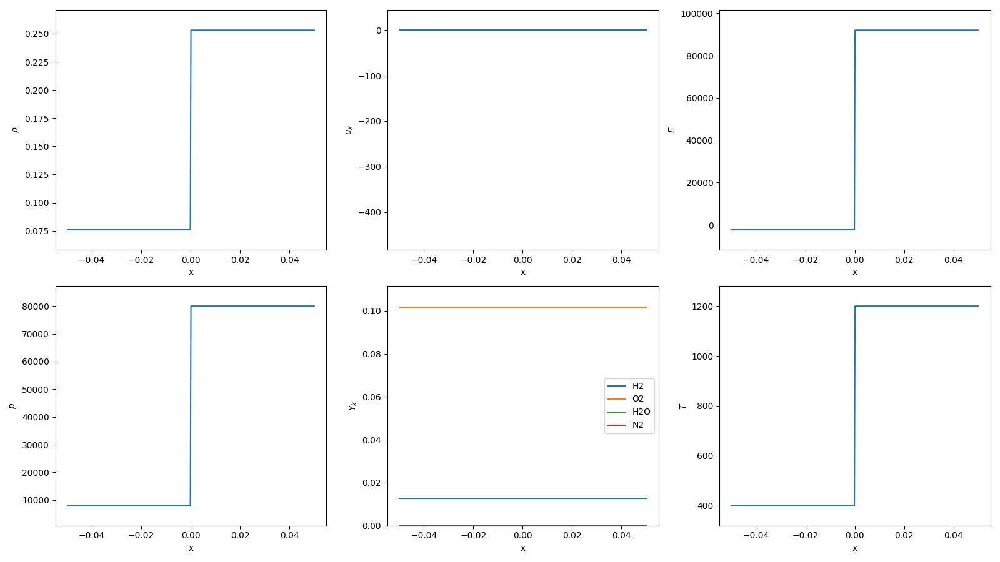
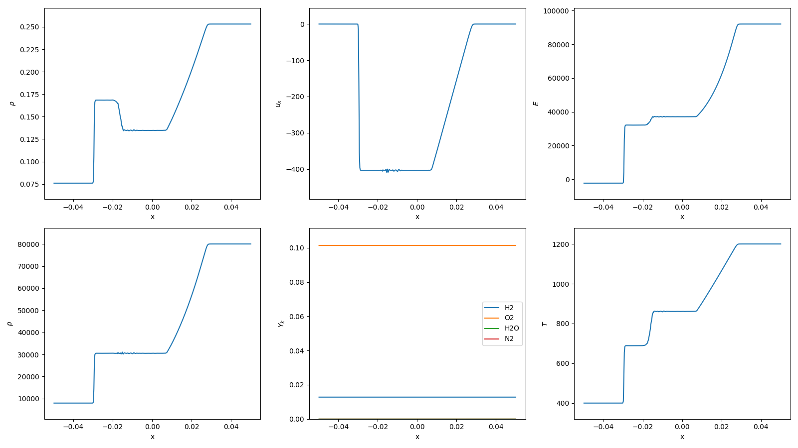
A sphere (R = 5 m, mass 1e6, heavy enough that the gas force is negligible) moves at 3.9 m/s toward the wall y = 0 (bc_ybeg = -15) and rebounds under collision_model = 1. For a homogeneous sphere on a fixed wall with Coulomb friction coefficient mu and normal restitution e, rigid-body impact theory (Maw et al. [54]) gives, for incoming normal and tangential speeds v_n and v_t:
The threshold and the two tangential results follow from the impulse balance of a sphere with moment of inertia 2/5 m R^2 and no initial spin. The setup follows the verification cases of Di Maio and Di Renzo [24].
check_collision.py reads the last restart_data/ib_state_*.dat and prints e_n = -vy_out / vy_in and the tangential speed against the applicable rigid-body result:
python3 examples/3D_mibm_wall_collision/check_collision.py <case directory> --angle 30 --e 0.98 --mu 0.092
Measured with 16^3 cells, first-order reconstruction, air at 1e5 Pa, a contact onset half a step into a step and collision_time = 20 steps (the gas plays no role, so the grid and the reconstruction do not matter):
| Case | Prescribed | Measured | Error |
|---|---|---|---|
| normal, e = 0.5 | 0.5000 | 0.4765 | -4.70 % |
| normal, e = 0.8 | 0.8000 | 0.7877 | -1.54 % |
| normal, e = 0.98 | 0.9800 | 0.97948 | -0.05 % |
| 30 deg, mu = 0, e = 0.98: vx_out | 1.9500 | 1.94998 | 0.00 % |
| 30 deg, mu = 0.092, e = 0.98: vx_out (sticking, tan 30 deg = 0.577 < 0.638) | 1.3929 | 1.3958 | +0.21 % |
| 50 deg, mu = 0.092, e = 0.98: vx_out (sliding, tan 50 deg = 1.19 > 0.638) | 2.5309 | 2.5310 | +0.00 % |
Error in e_n against the steps per collision (--steps-per-collision):
| e | 20 | 40 | 80 |
|---|---|---|---|
| 0.5 | -4.70 % | -2.33 % | -1.16 % |
| 0.8 | -1.54 % | not run | -0.37 % |
The restitution error is first order in the steps per collision (it halves at each doubling). At the default 20 steps expect a few percent at low e. Its size and sign depend on where in a step the contact begins: an earlier run with the contact beginning on a step boundary gave +2.17 % and +0.69 % for e = 0.5 and 0.8 at 20 steps. The test registration therefore starts the contact half a step into a step, which keeps the contact timing the same on every compiler.
./mfc.sh run examples/3D_mibm_wall_collision/case.py -t pre_process simulation -n 1 --gpu mp python3 examples/3D_mibm_wall_collision/check_collision.py examples/3D_mibm_wall_collision
case.py takes --angle, --e, --mu, --speed, --cells, --steps-per-collision, --lead-steps and --weno_order. The suite registers the normal impact and the 50 degree sliding impact as 3D -> IBM -> Wall Collision -> .... The sticking case is not a golden: where the contact point stops sliding, the friction direction is the sign of a velocity that goes to zero, so the rebound depends on round-off. The tests are skipped in the single-precision lane, where one-step shifts of the contact onset flip the rebound.
One sphere against a wall, at 3.9 m/s and three angles. Body-body collisions, spin and other speeds are not covered. The collision force is first order in the time step; this check does not separate the force evaluation from the detection. The 3D_mibm_sphere_head_on_collision example places the start position with sin(angle) in both offsets, where a straight approach needs cos(angle) for the y offset; this example uses cos. See Validation.
A point blast at the center of \([-0.6, 0.6]^3\): energy \(E = 1\) in a sphere of radius --r0 = 0.04, gas at rest with \(\rho_0 = 1\), \(p_0 = 10^{-3}\), \(\gamma = 1.4\), extrapolation boundaries (the shock stays inside). The whole sphere is simulated: an AMR block must lie buff_size cells inside the domain, so an octant with symmetry walls through the blast cannot refine the shock where it meets them. The self-similar solution has the shock at \(R = \xi_0 (E t^2/\rho_0)^{1/5}\) with \(\xi_0 = 1.0328\), and a post-shock density of \((\gamma + 1)/(\gamma - 1) = 6\,\rho_0\).
MUSCL-2 with the minmod limiter, HLLC, SSP-RK3, CFL-adaptive \(\Delta t\) (0.3), saves every --t-save = 0.02 to --t-end = 0.16 ( \(R = 0.50\)). WENO5 with mp_weno = T went NaN next to the blast center at t = 0.004 on a uniform 256^3 octant (no AMR).
check_sedov.py reads every save (parallel_io = T; level 0 and the fine blocks), takes the blast energy from the data (the total energy above the ambient, which is conserved), averages the density over spherical shells one finest cell thick, and takes the shock radius at the outermost half-jump between \(\rho_0\) and the peak. It integrates the similarity equations for \(\xi_0\) and prints the radius error and the peak density ratio. Save times come from run_time.inf (run_time_info = T).
The checkers import mfc.viz, so run them in MFC's Python environment (source build/venv/bin/activate after any ./mfc.sh command).
Results and limits: the AMR section of the validation page.
A uniform periodic box (26 cells, no fluxes) of stoichiometric H2/air at 1 atm ignites at constant volume. compare_cantera.py advances a Cantera IdealGasReactor on the same mechanism (h2o2.yaml) and initial state and compares the ignition delay (time of max dT/dt), T(t), the end state against the UV equilibrium, and the sum of the mass fractions.
./mfc.sh run examples/1D_h2_air_ignition/case.py -t pre_process simulation post_process -n 1 -- --T0 1100 python3 examples/1D_h2_air_ignition/compare_cantera.py examples/1D_h2_air_ignition --case-args "--T0 1100"
case.py takes --T0 (1100 K), --dt (1e-8 s), --tend (0.8 ms), --nsaves (200) and --substeps (chem_paramsreaction_substeps, default 2). The checker needs Cantera and the Silo output (post_process).
Measured with GNU 13 (CPU, one rank, double), --nsaves 2000, dt = 1e-8 s, --substeps 2 (error = (MFC - Cantera)/Cantera for tau):
| T0 [K] | tau, MFC [us] | tau error | max abs(dT) [K] | T_end - T_eq [K] |
|---|---|---|---|---|
| 1000 | 305.37 | +2.8e-6 | 0.29 | +0.060 |
| 1100 | 86.167 | +1.1e-5 | 0.29 | +0.051 |
| 1200 | 44.228 | +2.0e-5 | 0.28 | +0.043 |
The ignition delay is estimated from the saved samples (parabola through the maximum of dT/dt), so use many saves (--nsaves 2000, one save per 0.4 us) for a delay accurate to 1e-5; with 200 saves the absolute tau shifts by about 0.5 % (the MFC-Cantera difference is unaffected). The error column compares MFC and Cantera at the same sample times. The checker's default tolerances (tau 5e-5, max abs(dT) 1 K) are for dt = 1e-8 s.
Time-step study at T0 = 1100 K, --substeps 2: dt = 2e-8 s gives tau error +6.9e-6 (200 saves) and max abs(dT) = 1.13 K, and dt = 5e-8 s gives +4.5e-5 and 6.46 K, against 0.29 K at 1e-8 s: second order in dt. With --substeps 0 (reaction source inside the Runge-Kutta stages) and dt = 5e-10 s at T0 = 1200 K the ignition delay agrees to 2e-11 and max abs(dT) < 1e-4 K. That integrator is stable only for dt below 2.51/(largest Jacobian eigenvalue), about 6e-10 s for burnt H2/air.
The suite registers 1D -> Chemistry -> H2-Air Ignition -> Split Reactions (T0 = 1200 K, dt = 2e-8 s, 100 us). See Gas-phase chemistry.
A circle (moving_ibm = 2, 1000 kg/m) in air at rest is accelerated by the body force g_x = 1e5 m/s^2. The gas force on it is negligible against the body force, so the centroid must follow x = g t^2 / 2 and v = g t. The check is sensitive to the Runge-Kutta stage weights of the position update and to nothing else: a wrong stage velocity gives an exact velocity and a wrong position.
check_kinematics.py reads the last restart_data/ib_state_*.dat and prints the relative errors of the centroid and the velocity:
python3 examples/2D_mibm_constant_acceleration/check_kinematics.py <case directory> [--tol 1e-10]
| cells per radius | steps | t [s] | position error | velocity error |
|---|---|---|---|---|
| 5 | 200 | 2.34e-6 | -3.6e-13 | -2.3e-13 |
| 10 | 200 | 1.17e-6 | -2.9e-13 | -1.9e-13 |
Both are round-off. A build with the stage weights of the position update before the fix of #2040 gave a position error of 1.2e-3 with the same exact velocity (measured earlier, not repeated here).
./mfc.sh run examples/2D_mibm_constant_acceleration/case.py -t pre_process simulation -n 1 --gpu mp python3 examples/2D_mibm_constant_acceleration/check_kinematics.py examples/2D_mibm_constant_acceleration
case.py takes --cells_per_R (default 5), --steps (200), --g (1e5) and --weno_order (default 1: first-order reconstruction keeps the check free of WENO weights, which amplify round-off; 5 gives WENO5 with the same kinematics). The suite registers it as 2D -> IBM -> Moving Circle -> Constant Acceleration with the golden ib_forces.dat history (force, velocity and centroid); it is skipped in the single-precision lane, where pressure round-off at 1e5 Pa moves the quiescent gas by about 1e-3 of the signal.
Only a constant acceleration is checked, not a force that varies in time. With moving_ibm = 1 and an analytic velocity such as U0 sin(w t), the velocity is evaluated at the step time rather than the stage time, and the centroid is off by about 1e-3 relative (cause not verified). See Validation.
Validates the immersed boundary (IBM) + non-Newtonian viscosity interaction: the channel's no-slip walls are two rectangular IB slabs instead of domain boundary conditions, so the flow exercises the Herschel-Bulkley viscous fluxes at the IB walls, which s_accumulate_ib_face_fluxes in m_ibm.fpp also sums into the IB force. Companion to examples/2D_poiseuille_thickening_nn, which validates the same fluid against the same analytic profile with BC walls.
Domain x in [0, 0.2] (periodic), y in [0, 0.3], grid m = 24, n = 95 (dy = 0.003125). Two rectangle IB slabs (patch_ibgeometry = 3, no-slip) bound the flow gap y in [0.05, 0.25] (half-height H = 0.1, centerline y_c = 0.15, 64 cells across the gap). Each slab extends beyond the domain in x and mostly outside the domain in y, so the only IB surface seen by the flow is its flat gap face; the slab centroids sit just inside the domain (a centroid exactly on the boundary is owned by no rank and its ib_state force record is never written). The domain BCs behind the slabs are no-slip walls (bc_y = -16), which keep the body-forced dead fluid inside the slabs benign. patch_ibmass = 0 so the reported IB force is the fluid force alone (no bf_x*mass bookkeeping term); ib_state_wrt = T writes it at every save.
Fluid and forcing match the BC-walled template (single Papanastasiou-regularized Herschel-Bulkley fluid, no yield stress):
| Parameter | Value | Role |
|---|---|---|
| fluid_pp(1)K | 5.0e-2 | consistency index |
| fluid_pp(1)nn | 1.5 | flow index > 1 -> shear-thickening |
| fluid_pp(1)tau0 | 0.0 | no yield stress (pure power law) |
| fluid_pp(1)hb_m | 1000.0 | Papanastasiou regularization parameter |
| fluid_pp(1)mu_min/mu_max | 1e-6 / 0.035 | viscosity clamp (~1.5x mu_wall = 0.0232, clamp inactive) |
Driven by g_x = 5e-2, rho = 1, pres = 10 (Mach ~3e-3); cfl_adap_dt with cfl_target = 0.3 to t_stop = 0.9 (~2 wall-viscous diffusion times).
In the gap the steady fully-developed power-law profile is
u(y) = (n/(n+1)) * (rho*g/K)^(1/n) * ( H^((n+1)/n) - |y - y_c|^((n+1)/n) )
and the steady x-force per wall per unit depth is tau_w * L_x with tau_w = rho*g*H = 5e-3.
./mfc.sh run examples/2D_ibm_poiseuille_nn/case.py -n 2 ./build/venv/bin/python3 examples/2D_ibm_poiseuille_nn/compare_analytic.py
(~2.5 min on 2 CPU ranks.) For the n = 1 equivalence check, run the newtonian and nn1 modes into two scratch copies and compare:
for MODE in newtonian nn1; do
mkdir -p build/ibm_nn_equiv/$MODE
cp examples/2D_ibm_poiseuille_nn/case.py build/ibm_nn_equiv/$MODE/
IBM_NN_MODE=$MODE ./mfc.sh run build/ibm_nn_equiv/$MODE/case.py -n 2
done
./build/venv/bin/python3 examples/2D_ibm_poiseuille_nn/check_equivalence.py \
build/ibm_nn_equiv/newtonian build/ibm_nn_equiv/nn1
A — n = 1 Newtonian equivalence (IBM mu_eff degeneracy). A power-law fluid with nn = 1, tau0 = 0, K = 0.02 is analytically the same fluid as a Newtonian one with mu = 0.02. Running both modes with the same fixed dt = 6e-5 to t = 0.3 gives bitwise identical velocity fields (max abs and rel L2 difference 0.0) and bitwise identical IB wall forces — the non-Newtonian IBM path reduces exactly to the Newtonian one.
B — analytic power-law profile (n = 1.5). Relative L2 error of the steady x-averaged gap profile vs. the analytic solution: 5.8% with the nominal H = 0.1 (slab faces), 2.6% with H = 0.1016 fitted from the u -> 0 crossings (IBM walls are sharp only to ~half a cell; the fitted walls sit ~dy/2 = 0.0016 outside the faces). Steady-state drift between the last two saves 2.0e-3; profile bluntness (mean/peak) 0.640 vs. the n = 1.5 theory 0.625 (parabola 0.667), confirming the pointed shear-thickening profile. The BC-walled template achieves 1.46% on the same fluid; the extra error is the diffuse-wall representation, not the viscosity model.
C — IB wall force. The IB force, the momentum flux the solver applies across the faces between slab and fluid cells, reaches 9.97e-4 per wall at t = 0.9 (both walls identical by symmetry) vs. the analytic tau_w*L_x = 1.0e-3, a ratio of 0.997. The earlier volume-integration estimator, which differenced ghost-cell states inside the body, gave 0.971.
Third member of the conduction verification set, after examples/1D_conduction_convergence (Cartesian) and examples/2D_axisym_conduction_convergence (radial, plus the axis cell). Both of those run at p = 0 and therefore have no azimuthal direction at all. This case covers it.
In 3D cylindrical mode (grid_geometry == 3) the third coordinate is the azimuth and dz is in radians, so the azimuthal term carries two metric factors, (1/r^2) d2T/dtheta2: one for the gradient and one for the divergence. m_rhs.fpp divides the conduction flux difference by dz(l) alone, so both factors have to come out of grid_spacing in m_conduction.fpp, which is why that direction uses y_cc(y)**2 * (z_cc(z+1) - z_cc(z)).
Ideal gas, so T = p / ((Gamma - 1) * rho * cv). Setting
rho(r, theta) = RHO0 / (1 + A (r/R)^2 cos(theta))
at uniform pressure gives exactly
T(r, theta) = T0 (1 + A (r/R)^2 cos(theta)), T0 = P0 / ((Gamma - 1) RHO0 cv),
which is single-valued and smooth on the axis. Its cylindrical Laplacian splits into
(1/r) d/dr (r dT/dr) = +4 A T0 cos(theta) / R^2 (radial half) (1/r^2) d2T/dtheta2 = -1 A T0 cos(theta) / R^2 (azimuthal half)
and the sum, 3 A T0 cos(theta) / R^2, is independent of r. At t = 0 the velocity is zero and the pressure uniform, so every Euler flux and every cylindrical geometric source vanishes and the whole right-hand side is conduction:
(rho E(dt) - rho E(0)) / dt = k grad^2 T + O(dt).
The radial half is reproduced exactly by the discretization: the 3D cylindrical r-grid is uniform (m_grid.f90 only half-cells the axis for grid_geometry == 2), T is quadratic in r, and both the two-point face gradient and the two-point average of F are exact for that. Subtracting it therefore isolates the azimuthal half, and compare_analytic.py reports it ring by ring. Dropping either metric factor multiplies the azimuthal half by r^2, which no refinement removes.
Boundaries: periodic in x and in theta, so the azimuthal direction has no boundary error at all. Excluded from the bulk error are cell k = 0, which reads the ghost across the axis (the documented non-converging axis error), and the two outermost cells: k = NR-1 reads the mirrored wall ghost where dT/dr is not actually zero, and k = NR-2 picks up an O(dt) share of that through the later Runge-Kutta stages.
for np_ in 32 64 128 256; do
NP=$np_ ./mfc.sh run examples/3D_cyl_azimuthal_conduction_convergence/case.py -n 1
NP=$np_ ./build/venv/bin/python3 examples/3D_cyl_azimuthal_conduction_convergence/compare_analytic.py
done
NR = 32, NX = 32, exact = 7.5e-01 cos(theta). The azimuthal truncation error of a centered second difference is -dtheta^2/12 of the azimuthal half, i.e. dtheta^2/36 of the total, and nothing else contributes:
| NP | bulk L2 rel err | order | predicted dtheta^2/36 |
|---|---|---|---|
| 32 | 1.070e-03 | – | 1.071e-03 |
| 64 | 2.676e-04 | 2.00 | 2.677e-04 |
| 128 | 6.689e-05 | 2.00 | 6.693e-05 |
| 256 | 1.670e-05 | 2.00 | 1.673e-05 |
Azimuthal half recovered ring by ring, as a fraction of its exact value (NP = 64, so the expected value is 1 - dtheta^2/12 = 0.999197 at every radius):
| r | 0.094 | 0.531 | 1.031 | 1.844 |
|---|---|---|---|---|
| got/exact | 0.999199 | 0.999197 | 0.999197 | 0.999197 |
Flat across a 20x span in r, i.e. a 380x span in r^2. Refining NR at fixed NP leaves the bulk error unchanged (2.676e-04 at NR = 32, 2.656e-04 at NR = 64), confirming that the radial half contributes no error and that the table above is a pure azimuthal measurement.
Without the r^2 in grid_spacing the same NP = 64 run gives a bulk L2 of 3.542e-01 and a ring-by-ring azimuthal ratio of 0.0088, 0.282, 1.063, 3.397 at those four radii – exactly r^2, and independent of resolution.
The Orszag-Tang vortex ($\gamma = 5/3$, hcid = 250) on a periodic unit square, 513 x 513 cells, WENO5-M, HLL, to t = 1, with hyper_cleaning (speed 2.5, damping time 0.004).
check_divb.py prints, for each save, the normalized divergence error $\overline{|\nabla\cdot B|}\,\Delta x/\overline{|B|}$ (second-order central differences), its maximum and the change of the total mass; given a second run of the same deck with --no-clean, it prints the two errors side by side. Without cleaning this deck stops with NaN at step 900 (t = 0.36), so run the control with --steps 800.
./mfc.sh run examples/2D_orszag_tang_hyper_cleaning/case.py -t pre_process simulation post_process -n 1 python3 examples/2D_orszag_tang_hyper_cleaning/check_divb.py examples/2D_orszag_tang_hyper_cleaning [<control run>]
Results: Validation: Ideal MHD.
Reference:
Bezgin, D. A., & Buhendwa A. B., & Adams N. A. (2022). JAX-FLUIDS: A fully-differentiable high-order computational fluid dynamics solver for compressible two-phase flows. arXiv:2203.13760
Ghia, U., & Ghia, K. N., & Shin, C. T. (1982). High-re solutions for incompressible flow using the Navier-Stokes equations and a multigrid method. Journal of Computational Physics, 48, 387-411
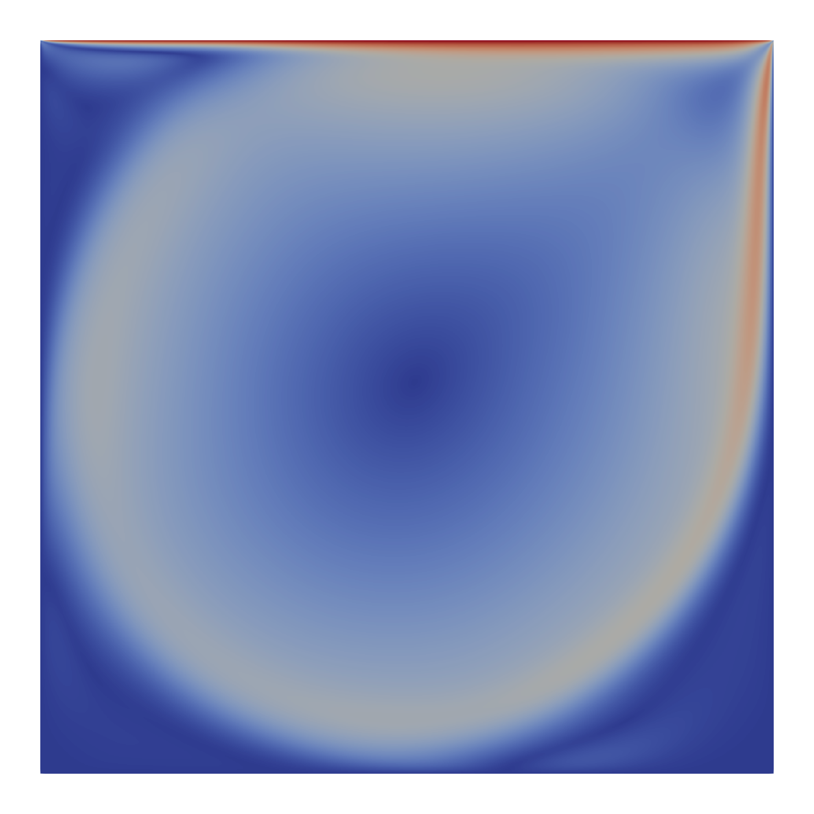
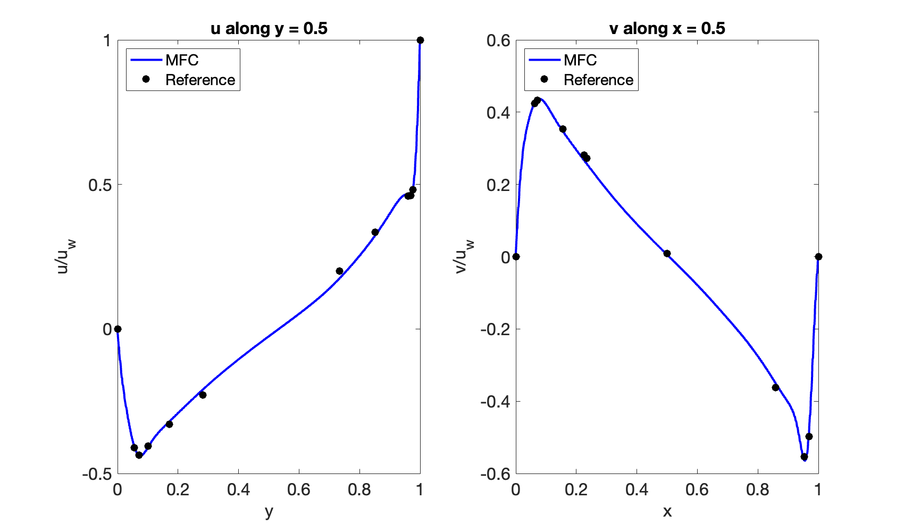
A density contact (1 | 2 at x = 0.5) in a hypoelastic ideal gas ($\gamma$ = 1.4, G = 1, p = 1), periodic in y, with a uniform tangential velocity $v_0 = 1$ and a jump of the shear stress $\tau_{xy}$ = 0 | A. The jump launches shear waves at $c_S = \sqrt{G/\rho}$ = 1 and 0.707. First-order MUSCL, HLLD, forward Euler.
The case serves two checks:
./mfc.sh run examples/2D_hypo_shear_contact/case.py -t pre_process simulation post_process -n 1 -- -N 128 --steps 106 python3 examples/1D_sodHypo/check_elastic.py examples/2D_hypo_shear_contact --case-args "-N 128 --steps 106"
--steps = ceil(0.8265 N) runs to t = 0.25. Results: Validation: Hypoelastic Wave Speeds.
A circle translates through gas at rest in a doubly periodic box (non-dimensional ideal gas, no chemistry), and the same circle is held while the gas streams past it at the same relative speed (the Galilean twin). In the closed box the gas mass is constant, so whatever the box gains is created by the body: a ghost-cell immersed boundary does not conserve mass at a moving wall, because gas flows through the faces between the fluid and the body into ghost cells whose values are then overwritten, and cells change side as the body moves. ib_mass_relax (default 30 for a moving body) takes that mass back. The twin checks the conducted heat and the force of the moving body against the held one. The full results and limits are on the Validation: Moving-Body Mass Budget and Galilean Twin page.
check_budget.py reads the run directory:
check_budget.py mass RUN ... gas mass (cells outside the body) at every save, and the steady
rate in % of the gas per diameter travelled after the first diameter
check_budget.py twin --moving RUN --fixed RUN moving/fixed ratio of the conducted heat (from the temperature field) and of
F_x (ib_forces.dat), and the RMS of F_moving(t) - F_fixed(t)
./mfc.sh run examples/2D_ibm_moving_mass_budget/case.py -t pre_process simulation -n 1 --gpu -- \
--cells_per_D 24 --mach 0.3 --box 5 --travel 6 --nsave 24 --relax 0
python3 examples/2D_ibm_moving_mass_budget/check_budget.py mass examples/2D_ibm_moving_mass_budget
The output goes next to case.py, so copy the directory for each run. --relax 30 gives the correction; omitting --relax leaves the solver default. The twin pair (cold wall, Re 40):
... -- --cells_per_D 16 --mach 0.3 --box 8 --Re 40 --Twall 0.2 --ip_interp 2 --travel 6 --nsave 12 --stride 1 ... -- (the same) --frame fixed python3 examples/2D_ibm_moving_mass_budget/check_budget.py twin --moving <moving run> --fixed <fixed run>
Without arguments the case is the CI-sized test: 24 cells per diameter in a box of 5 D, 100 fixed steps (a quarter of a diameter of travel). It runs in the suite as 2D -> IBM -> Moving Circle -> Mass Budget (and -> Cold Wall, the viscous isothermal twin). A build without MPI needs --serial_io; the checker then reads p_all/.
GNU 13 CPU, double precision, master at 0cdfdf02a. Inviscid, Mach 0.3, box 5 D, 6 D travelled, 24 saves, inverse-distance image points (ib_ip_interp = 1). Steady rate of the gas mass, % of the gas per diameter travelled (least squares after the first D), and the total change after 6 D:
| cells/D | ib_mass_relax = 0: rate | total | ib_mass_relax = 30: rate | total |
|---|---|---|---|---|
| 16 | +0.0503 | +0.357 % | +0.0022 | +0.016 % |
| 24 | +0.0237 | +0.192 % | -0.0008 | +0.002 % |
| 32 | +0.0130 | +0.134 % | -0.0023 | +0.003 % |
With TSC image points (ib_ip_interp = 2): +0.0544 and +0.0166 %/D without the correction at 16 and 32 cells/D, +0.0024 and -0.0022 with it. The uncorrected drift falls with refinement at roughly first order; the correction holds it to about 0.002 %/D.
Galilean twin, viscous (Re 40, Pr 0.7, weno_Re_flux with weno_avg = T), Mach 0.3, box 8 D, TSC, 6 D travelled, means over the last 3 D, GNU 13 CPU. Moving over fixed:
| wall T / gas T | cells/D | heat, ib_mass_relax = 0 | heat, 30 | F_x, 0 | F_x, 30 |
|---|---|---|---|---|---|
| 0.9 | 16 | 0.944 | 1.009 | 0.978 | 0.976 |
| 0.9 | 32 | 0.974 | 1.009 | 0.985 | 0.984 |
| 0.2 | 16 | 0.764 | 0.823 | 1.400 | 1.915 |
| 0.2 | 32 | 0.894 | 0.928 | 0.784 | 0.785 |
The heat of a wall close to the gas temperature agrees with its twin within 1 % with the correction; the force differs by 2 %. A cold wall (0.2 of the gas temperature) is not like for like: the conducted heat is 18 % low at 16 cells/D and 7 % at 32, and the force of the moving body differs from its twin by tens of percent with no consistent sign. See the page for the causes.
The box is closed and the body is a prescribed (kinematic) circle: this checks conservation and Galilean invariance, not a drag or heat-transfer value against a measurement. Not run here: reacting moving bodies and the 3D particle array (the examples 2D_ibm_wall_mass_budget and 2D_ibm_reacting_surface hold the fixed-body budget).
Stoichiometric H2/air at 300 K and 1 atm, h2o2.yaml, mixture-averaged transport, no Soret. case.py solves a Cantera FreeFlame (written to IC/, read through hcid = 170), shifts it to x = 6.5 mm of an 8 mm domain and starts it in the frame of the unburnt gas. The flame moves toward x = 0 (a wall); the outflow is a GRCBC subsonic boundary (bc_xend = -8) with the outlet pressure held at 1 atm.
./mfc.sh run examples/1D_h2_air_flame_speed/case.py -t pre_process simulation post_process -n 1 -- --dx_um 20 python3 examples/1D_h2_air_flame_speed/compare_flame_speed.py examples/1D_h2_air_flame_speed --case-args "--dx_um 20"
The case is not registered in the test suite (165 thousand steps at 40 um). Measured on master: dx = 40 um gives S_c = 2.3140 m/s (-0.76 % against the Cantera 2.3317), dx = 20 um gives 2.3268 m/s (-0.21 %). Results and limits: Gas-phase chemistry.
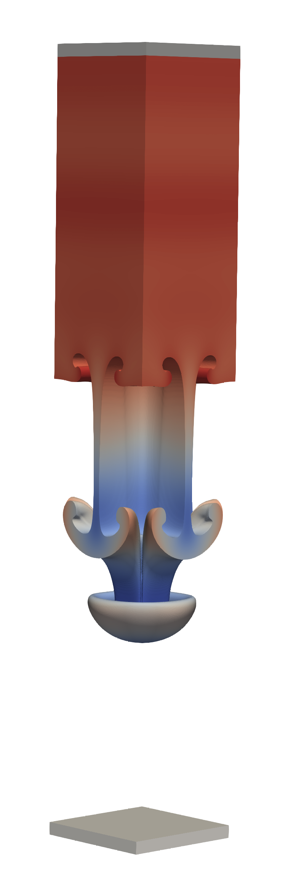
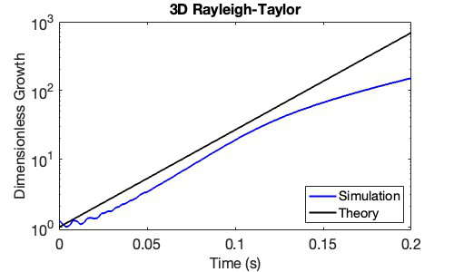
mpp_lim is off: this case runs without it, and it breaks pressure equilibrium at material interfaces (see mpp_lim in Case Files).
Validates the combined non-Newtonian terms of MFC's Herschel-Bulkley viscosity against a closed-form analytic Poiseuille profile: a shear-thinning power law (nn = 0.5 < 1) and a yield stress (tau0 > 0) acting together. The companion examples isolate each effect — 2D_poiseuille_nn / 2D_poiseuille_thickening_nn (power-law only, tau0 = 0) and 2D_bingham_poiseuille_nn (yield only, nn = 1). The signature of a correct general Herschel-Bulkley model is a rigid plug near the centerline (where |tau| < tau0) joined to a shear-thinning sheared profile at the walls.
Single Papanastasiou-regularized Herschel-Bulkley fluid with both a sub-unity flow index and a finite yield stress:
| Parameter | Value | Role |
|---|---|---|
| fluid_pp(1)K | 1.5e-2 | consistency index |
| fluid_pp(1)nn | 0.5 | flow index < 1 -> shear-thinning |
| fluid_pp(1)tau0 | 3.5e-3 | yield stress -> plug half-width y0 = 0.35 H |
| fluid_pp(1)hb_m | 1.0e4 | sharp Papanastasiou yield regularization |
| fluid_pp(1)mu_min/mu_max | 1e-6 / 0.3 | viscosity clamp (rigid plug) |
Driven by g_x = 0.1, rho = 1, pres = 10, giving tau_w = rho*g*H = 1e-2, u_plug ~ 4e-3 and Mach ~1e-3. Channel L_y = 0.2, H = 0.1, no-slip walls, periodic in x. Grid m = 24 (x), n = 63 (y).
The plug viscosity diverges as the shear rate -> 0, so the clamp mu_max sets the plug rigidity. mu_max = 0.3 (~6x the wall effective viscosity) keeps a clear plug while keeping the explicit viscous timestep dt ~ dy^2 rho/mu_max tractable: dt scales as 1/mu_max, so set mu_max just above the physical maximum required.
The shear stress is tau = rho*g*(H - y); the fluid only flows where |tau| > tau0. With tau = tau0 + K*|du/dy|^n and tau_w = rho*g*H > tau0:
plug half-width : y0 = tau0/(rho*g)
sheared region : u(y) = (n/((n+1)*rho*g)) * K^(-1/n) *
[ (tau_w - tau0)^((n+1)/n)
- (rho*g*(H-y) - tau0)^((n+1)/n) ] (|y-H| >= y0)
plug : u_plug = (n/((n+1)*rho*g)) * K^(-1/n) *
(tau_w - tau0)^((n+1)/n) (|y-H| < y0)
(upper half mirrors about y = H). Requires tau_w > tau0 for any flow.
./mfc.sh run examples/2D_herschel_bulkley_poiseuille_nn/case.py -n 2 python examples/2D_herschel_bulkley_poiseuille_nn/compare_analytic.py
The run reaches t_stop = 0.4 in ~5 min on 2 CPU ranks with dt ~ 1e-5.
Relative L2 error vs. the analytic Herschel-Bulkley profile: 3.8% (2-rank run, steady-state drift between the last two saves ~1.1%). The sheared-region momentum balance K*|du/dy|^n + tau0 = rho*g*(H-y) holds to ~1% near the walls. A flat plug forms at the centerline: because the Papanastasiou plug is regularized (not perfectly rigid), the strict >=99% u_max band understates it, but the >=95% u_max plug half-width = 0.0359 = 1.03 y0, matching the analytic y0 = tau0/(rho*g) = 0.035 = 0.35 H.
Two smooth periodic Euler problems that separate the reconstruction order from the primitive-variable conversion (Validation: Isentropic Vortex Order of Accuracy and Taylor-Green Decay):
--ic avg (default) starts from the exact conservative cell averages: case.py writes them to IC/ next to itself and hcid = 170 reads them, so each run needs its own copy of this directory. --ic point starts from point values. Other options: -N, --order (3, 5, 7), --teno, --cfl (0.02; use 0.005 for seventh order) and --t-end.
for N in 32 64 128 256; do
cp -r examples/1D_smooth_wave_order run$N
./mfc.sh run run$N/case.py -t pre_process simulation post_process -n 1 -- -N $N --problem gamma3
done
python3 examples/1D_smooth_wave_order/check_smooth.py run32 run64 run128 run256 \
--case-args "-N 32 --problem gamma3;-N 64 --problem gamma3;-N 128 --problem gamma3;-N 256 --problem gamma3"
The linear wave reaches the design order (5.0 for WENO5 and TENO5, 7.0 for WENO7 and TENO7). The $\gamma = 3$ wave is second order for every scheme, because MFC reconstructs primitive variables from cell averages. The tables are on Validation: Isentropic Vortex Order of Accuracy and Taylor-Green Decay. The example is not in the test suite.
A fixed no-slip isothermal sphere (immersed boundary, thermal_bc = 1) in dry air at Mach 0.2: the 3D companion of 2D_ibm_cylinder_drag_nu. It measures the mean drag coefficient and the Nusselt number of a heated wall against the Schiller-Naumann drag correlation and the Ranz-Marshall and Whitaker Nusselt correlations. The drag is taken two ways that share no code: the face-flux force MFC writes with ib_force_wrt (D/ib_forces.dat), and a momentum balance on cubes of half-width 1 and 2 diameters around the body, from the saved fields. Chemistry is on for the thermodynamics and mixture transport only (h2o2.yaml, no fuel, reactions off). The full results and limits are on the Validation: Sphere Drag and Nusselt Number page.
./mfc.sh run examples/3D_ibm_sphere_drag_nu/case.py -t pre_process simulation post_process -n 1 --gpu -- \
--silo --Re 100 --cells_per_D 12 --xu 3 --xd 6 --hy 3 --steps 0 --tstar 40
python3 examples/3D_ibm_sphere_drag_nu/check_sphere.py examples/3D_ibm_sphere_drag_nu [--hot <heated run>]
--tw_ratio 1.1 gives the heated twin whose directory goes to --hot (the Nusselt number uses the difference of the two, which removes the viscous heating of the wall). The output goes next to case.py, so copy the directory for each run. --steps 0 selects the adaptive time step and --tstar the run length in t U / D. Without arguments the case is the CI-sized test: Re 20, 6 cells per diameter, a 4.2 D cube (25 x 25 x 25 cells), 30 fixed steps; it runs in the suite as 3D -> Chemistry -> IBM -> Sphere Drag Nu (golden: the force and heat histories and the conserved fields). The test is a smoke-level body 6 cells across, not a resolved sphere.
A100, NVHPC 25.11, double precision, master at 860663835. Domain [-3 D, 6 D] x [-3 D, 3 D]^2 (2.2 % area blockage), ib_ip_interp = 1, adaptive step, 12 and 8 cells per diameter. Cd_IB is the face-flux force, Cd_CV the momentum balance on the cube of half-width 2 D (1 D in the page), SN Schiller-Naumann (2.610 at Re 20, 1.092 at Re 100), RM Ranz-Marshall (4.396, 7.359), W Whitaker (3.948, 6.621).
| Re | cells/D | Cd_IB | vs SN | Cd_CV (2 D) | L/D | Nu | vs RM | vs W |
|---|---|---|---|---|---|---|---|---|
| 20 | 8 | 2.532 | -3.0 % | 2.534 | 0 | 4.083 | -7.1 % | +3.4 % |
| 20 | 12 | 2.617 | +0.3 % | 2.618 | 0 | 4.059 | -7.7 % | +2.8 % |
| 100 | 8 | 1.114 | +2.1 % | 1.102 | 0.755 | 6.939 | -5.7 % | +4.8 % |
| 100 | 12 | 1.101 | +0.9 % | 1.100 | 0.795 | 6.905 | -6.2 % | +4.3 % |
L/D at Re 100: Johnson and Patel 0.88; no recirculation at Re 20 (below Re of about 24). The Nusselt number lies between the two correlations, which differ by 11 % from each other. Not run here: Re 300 (the wake needs t U/D of about 100), 20 cells per diameter (about 8 times the cost of 12), and the Mach 0.3-2 rows; the 8-cell runs stop at t U/D 12 (Re 100: not fully settled, Cd still falling by 0.2 % per two time units).
The ghost value of a no-slip wall is the wall value (first order, #2389), so the wake is short and the Nusselt number may drift with refinement; the 2.2 % blockage raises Cd slightly; the correlations are incompressible fits of 5 % (drag) and 11 % (between the two Nusselt correlations). A 12 cells/D run takes 2 to 3 hours on one shared A100.
A temporally-evolving supersonic reacting shear layer between a hot air stream and an N2-diluted hydrogen stream. The base state comes from Cantera-only stream mixing (or a counterflow flame with --hot) extruded into 3D by hcid=371. This is the supersonic counterpart to examples/2D_reacting_mixing_layer, which runs the same flamelet machinery at Mc = 0.3.
| Parameter | Value |
|---|---|
| Oxidizer stream | air, X_O2 = 0.21, 500 K |
| Fuel stream | X_H2 = 0.5, balance N2, 300 K |
| Pressure | 101325 Pa |
| Vorticity thickness delta_omega | 1.0e-3 m |
| Convective Mach number Mc | 1.5 |
| Domain | [15, 20, 10] delta_omega in (x, y, z) |
| Grid | 14 pts/delta_omega in x and z, 28 in y, so 210 x 560 x 140 |
| Time step | 1e-9 s, RK3 |
| Numerics | WENO5 (mapped, monotonicity-preserving), HLLC |
| Boundaries | periodic in x and z, ghost-cell extrapolation in y |
| Chemistry | San Diego mechanism, 9 species, unity-Lewis transport |
x is streamwise, y is cross-stream (the flamelet profile axis), z is spanwise. The resolution density follows the temporal mixing-layer DNS of Wang et al. (Combustion and Flame, 2024), with the box reduced to a quarter of theirs in each direction.
The fuel stream is diluted because pure H2's sound speed is over 4x the oxidizer's, so reaching Mc = 1.5 would demand a velocity split of roughly 2650 m/s. X_H2 = 0.5 brings that to about 1394 m/s and moves the stoichiometric mixture fraction off the domain edge.
case.py calls flamelet_ic.py to solve a 1-D flamelet on the cross-stream grid and write it as prim.<n>.00.000000.dat under IC/. hcid=370 would extrude those files uniformly across z and leave the flow z-invariant, so this case uses hcid=371: it scales the file's cross-stream velocity by 1 + 0.5*cos(k_z z) and sets the spanwise component from the result, giving the IC 3D content at step 0. k_z = 2*pi/L_z is taken over the global domain, so the IC does not depend on the MPI decomposition.
The in-plane (x, y) perturbation is baked into the files by perturb_xy, seeded by perturb_seed in case.py. IC/ is gitignored and regenerated on a fresh checkout, so the fixed seed is what keeps the case reproducible. Regeneration is skipped when IC/ already matches the grid and the physical parameters, tracked in .cache_key.json.
The file spacing must match the run grid. A mismatch aborts in pre_process, so delete IC/ and let it regenerate after changing the grid or --scale.
./mfc.sh run examples/3D_reacting_mixing_layer/case.py -n 8
--scale shrinks the grid for cheap runs; --scale 0.05 gives 32^3. --hot runs the full Cantera counterflow flame solve instead of the default cold mollified profile. flame_strain_rate in case.py sets the nominal inlet strain rate (default 100/s). The hot profile is mapped by mixture fraction onto the prescribed shear layer; it replaces the former scalar-dissipation-matched flamelet initialization. See Thermochemistry implementation for the model and validation details.
The mechanism ships alongside the case as sandiego.yaml (UC San Diego Combustion Research Group, https://web.eng.ucsd.edu/mae/groups/combustion/mechanism.html).
Three ideal-gas ($\gamma = 1.4$) shock tubes on $0 \le x \le 1$ with the jump at $x = 0.5$ and outflow ends: Sod (default; $t = 0.2$), Lax (--problem lax; $t = 0.14$) and Toro's test 2, the "123" double rarefaction (--problem 123; $t = 0.15$). case.py also takes the grid (-N), the reconstruction (--order, --muscl, --muscl-lim, --teno), --riemann hll|hllc|lax_friedrichs, --cfl, and --igr 3|5, which runs information geometric regularization on a 2D strip 8 cells high, periodic in $y$ (IGR has no 1D path), with elliptic smoothing of the initial jump.
check_riemann.py reads one or more finished runs and prints the L1 errors of density, velocity and pressure against the exact cell averages (riemann_exact.py, Toro chapter 4), and the observed order between successive grids. It reads the states, the interface, $\gamma$ and the time from the run's input files, so it also checks examples/1D_sodshocktube and examples/1D_laxshocktube.
./mfc.sh run examples/1D_sod_convergence/case.py -t pre_process simulation -n 1 -- -N 512 --problem lax python3 examples/1D_sod_convergence/check_riemann.py <run 128> <run 256> <run 512> [--tol 1e-3]
The output is written next to case.py, so copy the directory per run. Results (WENO1-7, TENO5, MUSCL, HLL/HLLC/Lax-Friedrichs, IGR, 128 to 2048 cells) and limits: Validation: Shock Tubes and the Shu-Osher Problem. The suite runs the L1 self-convergence of this case for ten reconstructions (Convergence -> Sod).
The 3D companion of 2D_flame_vortex_pair: the same flame, mechanism, boundaries and fixed-dt numerics in a 3.2 mm cube, hit by a vortex ring (radius 0.4 mm, Gaussian core 0.15 mm, circulation 0.022 m^2/s, axis along x, centre at x = 0.9 mm). The ring's velocity is the exact axisymmetric Stokes stream function of its core. pre_process writes a uniform state and ic3d.py overwrites the restart file with the flame and the ring, so the run takes three commands and the case is not in the test suite. The restart file needs parallel_io (an MPI build).
./mfc.sh run examples/3D_flame_vortex_ring/case.py -n 1 -t pre_process -- --N 64 python3 examples/3D_flame_vortex_ring/ic3d.py examples/3D_flame_vortex_ring ./mfc.sh run examples/3D_flame_vortex_ring/case.py -n 1 -t simulation post_process -- --N 64 python3 examples/3D_flame_vortex_ring/analyze_fv3d.py RUN64 RUN128 # copies of this directory, one per grid
analyze_fv3d.py prints the H2O mass, the flame area (T = 1200 K isosurface) and the heat release at 40, 70 and 100 us, with the observed order and Richardson value for three grids (it needs scikit-image). ic3d.py --gamma 0 with --nyz 32 gives the flat-flame control.
Run on an A100 at 32^3 to 20 us on master at 0cdfdf02a to check the three-command procedure (H2O mass 4.73474e-10 kg, flame area 1.02521e-5 m^2, heat release 59.59 W at 20 us). Convergence of the pre-merge study (64^3, 128^3, 256^3; not re-measured here) is in the page below: H2O mass orders 1.8 to 2.6, flame area order 2.0 at 70 us.
Results and limits: Flame-vortex interaction.
The Sod problem (rho, u, p = 1, 0, 1 left and 0.125, 0, 0.1 right of x = 0.5, gamma = 1.4) run to t = 0.2 with one or two refined 2:1 levels that regrid onto the shock and the contact (amr_tag_eps = 0.05 on the normalized density jump; the rarefaction stays at the base resolution). case.py uses mapped WENO5, HLLC and SSP-RK3 at CFL 0.4 on the cells that set dt (the finest level lock-step, the base grid subcycled), outflow ends.
./mfc.sh run examples/1D_amr_sod/case.py -t pre_process simulation -n 1 -- -N 200 --levels 2 python3 examples/1D_amr_sod/check_sod.py examples/1D_amr_sod
The checkers import mfc.viz, so run them in MFC's Python environment (source build/venv/bin/activate after any ./mfc.sh command).
case.py takes -N (base cells), --levels (refined levels; 0 is a uniform grid), --fine (a uniform grid at the finest AMR spacing, N * 2**levels cells), --subcycle, --buf (amr_buf, default 8), --regrid (amr_regrid_int), --tag-eps, --cfl and --t-end. check_sod.py takes one or more run directories and prints, from the composite solution (the finest level covering each point, read from the restart files), the L1 density error against the exact solution's cell averages and the signed contact and shock position errors (where rho crosses the middle of its exact jump). The exact solution is computed in the checker (the pressure function of Toro, ch. 4).
Measured on master after #2482 and #2474, AMD flang on a Frontier CPU node, double precision. L1(rho):
| Base N | uniform N | 1 level | 1 level, subcycled | uniform 2N | 2 levels | 2 levels, subcycled | uniform 4N |
|---|---|---|---|---|---|---|---|
| 100 | 3.42e-3 | 1.89e-3 | 1.90e-3 | 1.89e-3 | 9.82e-4 | 9.87e-4 | 9.37e-4 |
| 200 | 1.89e-3 | 9.35e-4 | 9.36e-4 | 9.37e-4 | 4.87e-4 | 4.90e-4 | 4.50e-4 |
| 400 | 9.37e-4 | 4.43e-4 | 4.43e-4 | 4.50e-4 | 2.70e-4 | 2.71e-4 | 2.62e-4 |
With one level the error is the uniform 2N error within 1.6 %; with two levels it is within 9 % of the uniform 4N error, on 40 to 48 % of its cells. With two levels and --buf 4, a derived amr_snap = 2 let the shock run ahead by 3.3e-3 at every N; #2474 derives it only for one-level runs (see the validation page).
The suite registers AMR -> 1D -> Example -> Sod two levels (-N 32, two levels, lock-step). Results and limits: Adaptive mesh refinement.
A Mach 3 shock runs into the density wave $\rho = 1 + 0.2\sin 5x$ (Shu & Osher 1989), here on $0 \le x \le 10$ with the shock at $x = 1$, to $t = 1.8$. The other 1D_shuosher_* examples run the same problem with WENO5-JS, WENO5-M, TENO5 and TENO7. -N sets the cell count (default 1001; the step count scales with it).
check_shuosher.py compares one or more runs of any of these examples with a fine reference run (-N 16016), averaged onto each run's cells, and prints the L1 density error over the domain and over the shocked entropy waves:
./mfc.sh run examples/1D_shuosher_wenoz5/case.py -t pre_process simulation -n 1 -- -N 16016 python3 examples/1D_shuosher_wenoz5/check_shuosher.py <reference run> <run> [<run> ...]
Results (all five schemes at 1001 cells, WENO5-Z from 143 to 8008 cells, CPU and A100) and limits: Validation: Shock Tubes and the Shu-Osher Problem.
Laminar flow between two isothermal no-slip walls at $T_s$, periodic in $x$ and driven at a fixed bulk mass flux (mean_mflux, mean_dpdx). The gas is air (h2o2.yaml, reactions off, mixture-averaged transport) at 1 atm, bulk Mach number 0.1, $\mathrm{Re}_{D_h} = 150$ ($D_h = 2H$). The mean-temperature source with mean_temp_wall = T_s replaces the heat that the walls remove or add by the thermally developed form $T = T_s + \psi(y)\,e^{-\beta x}$ with $\psi$ periodic, and the controller holds the mixing-cup temperature $T_m$ at mean_temp. The developed Nusselt number of constant-property laminar flow between parallel plates at constant wall temperature is exact (7.541, Shah & London 1978), so the case tests the source, its decay rate $\beta$, and the wall heat transfer together.
check_nu.py reads the finished run(s) and prints, for each: the hold error of $T_m$, $\beta H$ against the exact eigenvalue, and the Nusselt number two ways, $\mathrm{Nu}_\mathrm{src}$ from the source total (equal to the wall heat at steady state) and $\mathrm{Nu}_\mathrm{grad}$ from the wall temperature gradient of the last save, which does not use the source. With a hot and a cold run it also prints the pair value from half-differences, which cancels the first-order property asymmetry. The exact value includes axial conduction at the run's Peclet number ($\mathrm{Pe}_H = 53.3$ gives 7.5417).
python3 examples/2D_thermal_channel/check_nu.py <hot run> [<cold run>] [--tol 0.01]
Measured with NVHPC 25.11 (CPU, one rank), 32 cells across the gap, 25 along $x$, $T_m = 300$ K, run time 0.3 $H^2/\alpha$ (14070 steps; the state is developed by about 0.1). The source removes the viscous dissipation from the energy equation, which the developed state excludes:
| run | $T_m$ hold | $\beta H$ (exact 0.1412) | $\mathrm{Nu}_\mathrm{src}$ | $\mathrm{Nu}_\mathrm{grad}$ |
|---|---|---|---|---|
| $T_s$ = 330 K | 2e-8 | 0.1432 | 7.375 (-2.2 %) | 7.342 (-2.6 %) |
| $T_s$ = 270 K | 6e-9 | 0.1397 | 7.746 (+2.7 %) | 7.771 (+3.0 %) |
| pair | 7.553 (+0.16 %) | 7.549 (+0.09 %) |
A single run is biased by the property change across the gap, with opposite signs for the hot and the cold wall; the pair cancels it. The source and the gradient estimates of each run agree within 0.4 %, so the source removes the heat that crosses the walls. At Mach 0.3 the single runs stay within 3.2 % (pair 7.556 and 7.527); before the dissipation was removed they were off by 14 % and 29 %, and at Mach 0.1 the two estimates of a run differed by 5 %.
./mfc.sh run examples/2D_thermal_channel/case.py -t pre_process simulation -n 1 -- --ny 32 --nx 25 --tw 330 --tend 0.3
(copy the directory for the second run with --tw 270, since the output is written next to case.py). case.py takes --ny, --nx, --tw, --t0, --mach, --re, --tend (in $H^2/\alpha$) and --saves. The suite registers the first 100 steps of the 330 K case, with non-mapped WENO3 (the golden of the default WENO5 differs by a few percent between compilers), as 2D -> Chemistry -> Thermal Channel -> Wall Temperature.
Only the plane channel is verified. In periodic arrays of particles $\beta$ is not converged and the hot and cold runs disagree (see the note under mean_temp_wall in Case Files). The streamwise velocity in the first four cells next to each wall alternates about the Poiseuille profile by up to 12 % of the bulk velocity (cause not verified; the Nusselt numbers are not affected at the 0.2 % level). See Validation.
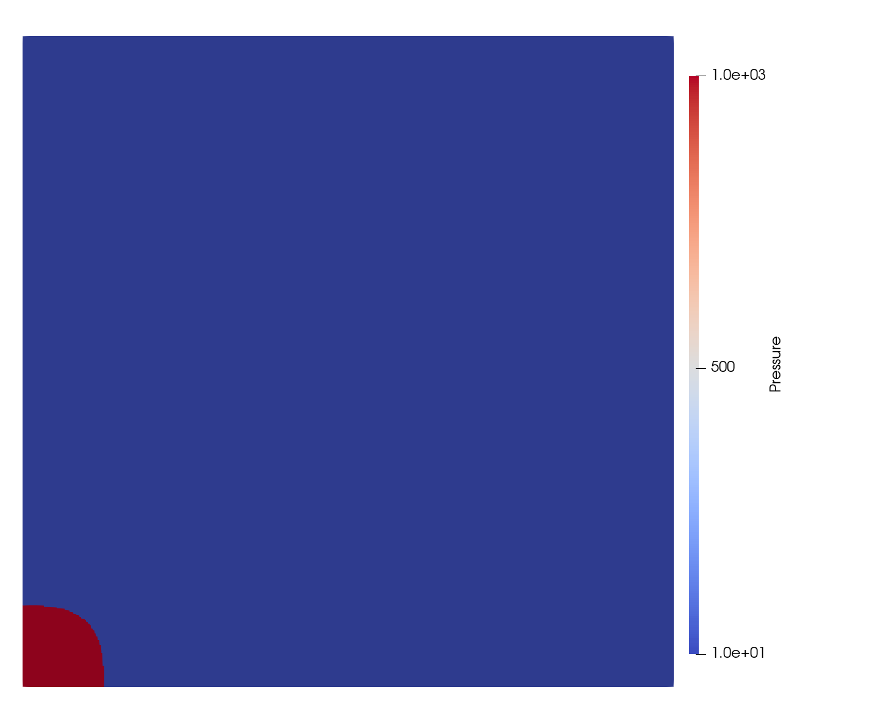
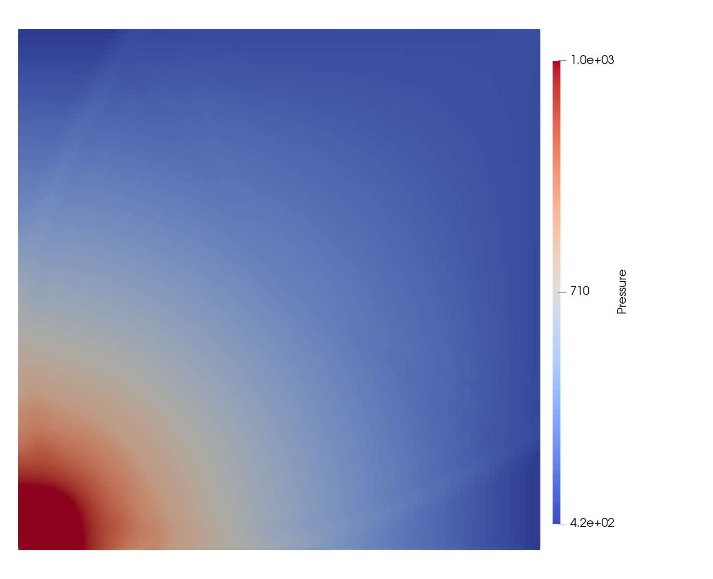
mpp_lim is off: this case runs without it, and it breaks pressure equilibrium at material interfaces (see mpp_lim in Case Files).
Reference:
C. W. Shu, S. Osher, Efficient implementation of essentially non-oscillatory shock-capturing schemes, Journal of Computational Physics 77 (2) (1988) 439–471. doi:10.1016/0021-9991(88)90177-5.
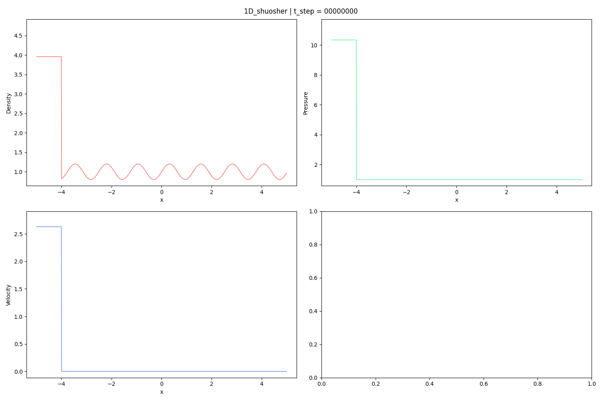
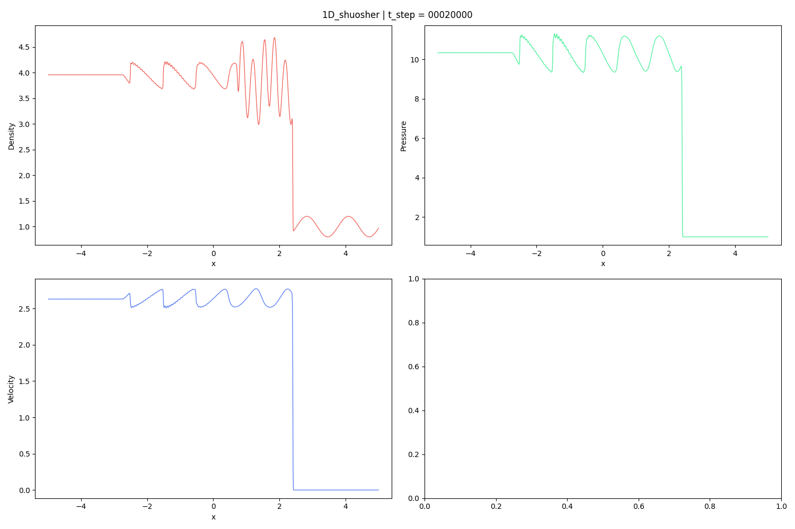
Liquid water, water vapor and air (stiffened-gas parameters of Le Metayer et al.) at 1.175e5 Pa and the saturation temperature, pulled apart at 2 m/s from the centre, with infinitely fast pressure-temperature-Gibbs relaxation (relax_model = 6) after each step. check_saturation.py reads the relaxed state and prints, in every cell, the temperature of each phase from its own EOS (thermal equilibrium) and the distance of T from T_sat(p), the root of g_liquid = g_vapor (chemical equilibrium).
./mfc.sh run examples/1D_exp_tube_phasechange/case.py -t pre_process simulation post_process -n 1 -- -me 3 python3 examples/1D_exp_tube_phasechange/check_saturation.py examples/1D_exp_tube_phasechange --case-args "-me 3"
-me 3 (6-equation model, default) or -me 2 (5-equation). Measured with GNU 13.3 (CPU, one rank), last save (t = 511 us):
| model | max abs(T_k/T_v - 1) | max abs(T - T_sat(p)) [K] | vapor mass change |
|---|---|---|---|
| 6-equation | 9.4e-7 | 7.0e-4 | +6.76 % |
| 5-equation | 9.4e-7 | 6.2e-4 | +6.76 % |
The initial state lies on the saturation curve to 2.5e-7 K. The fluid parameters give T_sat(1 atm) = 373.79 K (373.12 K measured). Only the equilibrium of the relaxed state is checked, not the wave structure. See Validation: Two-Fluid Shock Tube, Interface Advection and Phase-Change Equilibrium.
mpp_lim is off: this case runs without it, and it breaks pressure equilibrium at material interfaces (see mpp_lim in Case Files).
$u = U_0\sin(x/L_0)\cos(y/L_0)$, $v = -U_0\cos(x/L_0)\sin(y/L_0)$ in a periodic box $[-\pi, \pi]^2$ (patch_icppgeometry = 20), at $U_0 L_0/\nu = 1.2\times10^{-5}$ and Mach $3\times10^{-4}$. The exact solution decays as $e^{-2\nu t/L_0^2}$, so the kinetic energy decays at the rate $4\nu/L_0^2$. -N sets the cells per direction (default 200).
check_tgv.py fits the decay rate of the kinetic energy over all saves and prints its error, and the error of the final kinetic energy, against the exact solution:
./mfc.sh run examples/2D_TaylorGreenVortex/case.py -t pre_process simulation -n 1 -- -N 64 python3 examples/2D_TaylorGreenVortex/check_tgv.py <run N=32> <run N=64> [--tol 1e-4]
The rate error is 7e-7 at 32 cells and 1e-10 at 128. Results and limits: Validation: Isentropic Vortex Order of Accuracy and Taylor-Green Decay.
Two static rectangle immersed boundaries at y = 0 and y = H = 1 bound a channel periodic in x and driven by a body acceleration. The gas (rho = 1, sound speed 1, constant viscosity) starts from rest and is run to steady state at peak Mach number 0.05 and Re = u_max H / nu = 1. The exact solution is u = g y (H - y) / (2 nu), with flow rate g H^3 / (12 nu), so the profile and the flow rate are known. The example measures ib_wall_order = 1 (default) and ib_wall_order = 2 at a flat wall, on the cell face and 0.37 cell inside it.
check_poiseuille.py reads the run directory (serial text output):
python3 examples/2D_ibm_plane_poiseuille/check_poiseuille.py examples/2D_ibm_plane_poiseuille [--tol X]
Wall on a cell face, 12 slowest viscous times (error of the rms velocity over u_max; flow-rate error):
| cells across gap | L2, order 1 | L2, order 2 | flow rate, order 1 | flow rate, order 2 |
|---|---|---|---|---|
| 8 | 0.455 | 5.4e-2 | +0.682 | +8.7e-2 |
| 16 | 0.216 | 1.8e-2 | +0.322 | +2.8e-2 |
| 32 | 0.113 | 6.7e-3 | +0.159 | +9.7e-3 |
With the wall 0.37 cell inside a face: 8 cells 0.474 and 7.2e-2, 16 cells 0.223 and 2.0e-2 (orders 1 and 2). The default order acts as if the no-slip sat about 0.75 cell outside the wall; order 2 removes most of it. The wall force from the face fluxes is a body-force balance and agrees within 1.2e-3 on a cell face for both orders; with the wall inside a cell the order 2 force splits unequally between the two walls (+-7 % at 8 cells, +-4 % at 16). The page Wall-Normal Ghost Velocity at Viscous Walls has the full tables.
./mfc.sh run examples/2D_ibm_plane_poiseuille/case.py -t pre_process simulation -n 1 -- --cells 16 --ntau 12 --wall_order 2 python3 examples/2D_ibm_plane_poiseuille/check_poiseuille.py examples/2D_ibm_plane_poiseuille
case.py defaults to a CI-sized run (8 cells across the gap, 32 x 28 cells, 300 fixed steps, far from steady state). Options: --cells, --wall_order, --mach, --re, --offset (wall offset from a cell face, in cells), --nx, --steps, --ntau. Each run writes into the example directory; remove D/, restart_data/ and the .inp files between runs. Use one rank (serial text output). The suite registers the CI-sized run as 2D -> IBM -> Plane Poiseuille -> ib_wall_order=2 (a regression golden).
Static walls, one Mach number and Reynolds number, 2D, one machine and compiler (NVIDIA A100, NVHPC 25.11, double precision). The shear read from the three cells nearest a wall does not converge for either order. No high-Reynolds-number boundary layer and no moving flat wall was measured.
A detonation in 2H2 + O2 + 7Ar at 100 kPa and 298 K travels down a tube from a closed end (x = 0, reflecting wall) at the speed an equilibrium Chapman-Jouguet (CJ) analysis predicts, and is followed by a Taylor-Zeldovich expansion. case.py runs it with the 5-equation model (one fluid), mapped WENO5 with mp_weno, HLLC, SSP-RK3 and the split alpha-QSS reaction integrator with adaptive substeps (h2o2.yaml, no diffusion or viscosity), at a fixed dt = 0.3 dx / (u_vN + c_vN) from the frozen von Neumann (vN) state.
python3 examples/1D_cj_detonation/cj_ref.py # rewrites cj_ref.json and taylor_eq.txt (Cantera only) ./mfc.sh run examples/1D_cj_detonation/case.py -n 1 -t pre_process simulation post_process -- --ic tz --ppi 5 --L 0.5 python3 examples/1D_cj_detonation/check_cj.py examples/1D_cj_detonation --case-args "--ic tz --ppi 5 --L 0.5"
cj_ref.py computes the equilibrium CJ state (Rankine-Hugoniot with the sonic condition against the equilibrium sound speed), the frozen vN state, the ZND induction length Delta_i (distance to the maximum temperature gradient behind the frozen shock at 1.001 D_CJ) and the Taylor-Zeldovich fan, all from the mechanism file MFC uses. The committed cj_ref.json and taylor_eq.txt are its output for 2H2 + O2 + 7Ar (--p1 4e4 gives the 40 kPa mixture; the checker and case.py read the files, so rerun it only for that).
case.py takes --ic (tz: the Taylor-Zeldovich solution at 40 Delta_i as ten constant states plus a vN slab --vnw induction lengths thick; driver: a slug of equilibrium products at --pdrive times the explosion pressure), --ppi (cells per Delta_i), --L (tube length [m]), --steps (stop after this many steps), --nsave and the integrator options --substeps and --substeps-max. check_cj.py reads the Silo output and prints the front speed, the peak pressure and (for tz) the plateau pressure against the reference. It needs the Silo output (post_process).
Measured on master at 0cdfdf02a (the CJ solution: D_CJ = 1692.225 m/s, p_CJ = 1684.9 kPa, T_CJ = 3075 K, Delta_i = 0.0763 mm, plateau 622.9 kPa and 2570 K):
| Tube | cells per Delta_i | cells | D / D_CJ - 1 | D_end / D_CJ - 1 | local sd | p_max/p_vN | plateau p | earlier (D, D_end, plateau) |
|---|---|---|---|---|---|---|---|---|
| 50 cm | 2.5 | 16380 | -0.24 % | -0.19 % | 0.06 % | 0.943 | +0.12 % | -0.24 %, -0.17 %, +0.15 % |
| 50 cm | 5 | 32760 | -0.25 % | -0.18 % | 0.06 % | 0.985 | +0.10 % | -0.25 %, -0.16 %, +0.12 % |
| 10 cm | 2.5 | 3276 | -1.51 % | -1.14 % | 0.33 % | 0.920 | -0.20 % | -1.53 %, -1.14 %, -0.15 % |
| 10 cm | 5 | 6552 | -1.52 % | -1.14 % | 0.30 % | 0.965 | -0.31 % | -1.51 %, -1.15 %, -0.25 % |
The grids agree to 0.02 % in the front speed at the same time and the shortfall shrinks with distance (the 10 cm tubes end at 52 us, the 50 cm tubes at 264 us), so it is the approach to CJ and not discretization error. The plateau pressure is within 0.3 % and the front peak pressure reaches 0.92 to 0.99 of the vN value at 2.5 to 5 cells per Delta_i. NVHPC 25.11 on an A100 and on the CPU agree to the digits shown (10 cm, 2.5 cells per Delta_i); all runs are double precision.
The suite registers 1D -> Chemistry -> CJ Detonation -> Front Formation (--ic driver, 200 cells, 300 steps). Results and limits: Detonation.
A random array of fixed no-slip isothermal bodies (2D cylinders, or spheres with --dim 3) in a periodic box, driven at a held bulk mass flux by the mean pressure gradient controller (mean_mflux). The case records the force on every body (D/ib_forces.dat), the heat it takes (D/ib_heat.dat) and the controller state (mean_dpdx.dat). --thermostat adds the thermally developed controller of Sun et al. (2015) (mean_temp_wall) for the Nusselt number. Gas: dry air with h2o2.yaml (thermodynamics and transport only, no reactions). Results, references and limits are on the Validation: Periodic Particle Arrays page.
./mfc.sh run examples/2D_ibm_periodic_array/case.py -n 2 --gpu python3 examples/2D_ibm_periodic_array/check_array.py examples/2D_ibm_periodic_array
Without arguments the case is the CI-sized run: 12 cylinders at a solid fraction of 0.2, Re_m 20, 14 cells per diameter (96 x 96 cells), 200 fixed steps on 2 ranks, far from steady (2D -> Chemistry -> IBM -> Periodic Array; its golden holds the conserved fields, the force and the heat histories). A drag run needs --tstar 40 or more (about 12000 steps), and the 3D box --dim 3 --n_bodies 20 --mach 0.3 --cfl 0.2 --cells_per_D 16 --tstar 10. The placement is a seeded random sequential addition (--seed), identical on every Python version. check_array.py needs no post_process output.
NVIDIA A100 80GB, NVHPC 25.11, double precision, master at 0cdfdf02a; 20 spheres at a solid fraction of 0.2 in a cube of 3.74 diameters, ib_ip_interp = 1, last 40 % of tW/D = 10. F/F_St is the total force per sphere over 3 pi mu D (1 - phi) W (Tenneti et al. 2011, Eqs. 33 and 38); the reference is their Eq. 43 at the realized Re_m.
| Re_m | seed | cells/D | F/F_St | Tenneti | error | sum(F_x) / (-dp/dx V_f) |
|---|---|---|---|---|---|---|
| 20 | 1 | 16 | 7.075 | 7.366 | -4.0 % | 1.0001 |
| 20 | 2 | 16 | 7.354 | 7.355 | -0.0 % | 1.0001 |
| 100 | 1 | 16 | 13.973 | 12.621 | +10.7 % | 1.0001 |
| 100 | 2 | 16 | 14.337 | 12.605 | +13.7 % | 1.0001 |
| 100 | 1 | 24 | 13.894 | 12.606 | +10.2 % | 1.0000 |
The 2D run of the CI case to tW/D = 43 holds Q to 1e-6, closes the momentum balance to 1.0000 and gives a per-body force spread of 0.44 of the mean.
Nusselt number (--thermostat, 20 spheres, Re_m 20, 16 cells/D, Mach 0.1, bodies at 290 K and 310 K, tW/D = 8): 6.11 (cold) and 5.71 (hot) against Gunn 5.995; the pair mean 5.91 is 1.4 % below Gunn and 1.7 times the Sun et al. (2015) value on the same basis. The hot/cold asymmetry (7 %, 28 % before the thermostat removed the viscous dissipation) is an open item, so treat the values as plus or minus 15 %; see the Validation: Periodic Particle Arrays page.
A planar Mach 1.66 shock in air (p1 = 82.7 kPa, T1 = 291.9 K) enters a random curtain of fixed no-slip bodies of diameter 115 um at a solid fraction of 0.2, periodic across the flow, with the post-shock state held at the inflow face. The quantity checked is the Favre-averaged gas velocity through the curtain, against the particle-resolved DNS of Sridhar, Fox and Capecelatro (2025, Case 5), whose profiles ship as sridhar2025_ms166_phi02.txt (values read from the published figure, binned medians). --single puts one body at the shock's arrival point instead (unsteady drag against Mehta et al. 2016); --moving frees the bodies; --slip and --re_ps select the wall model. The full results are on the Validation: Shock-Particle Interaction and Dense Curtains page.
./mfc.sh run examples/2D_ibm_shock_curtain/case.py -n 1 --gpu
Without arguments this is the CI-sized run: 12 cylinders in a curtain 6 D thick and 8 D wide, 12 cells per diameter (240 x 96 cells), 300 fixed steps with the shock inside the curtain (2D -> IBM -> Shock Curtain; the golden holds the conserved fields and the force history). The comparison with the DNS is 3D and runs separately:
./mfc.sh run examples/2D_ibm_shock_curtain/case.py -t pre_process simulation post_process -n 1 --gpu -- \
--dim 3 --h 17.4 --width 6 --xu 7 --xd 23 --cells_per_D 10 --steps 0 --tau 2 --frames 20 --silo
python3 examples/2D_ibm_shock_curtain/check_curtain.py examples/2D_ibm_shock_curtain --png curtain_profiles-2D_ibm_shock_curtain-example.png
Single-sphere drag (Ms 1.22, inviscid slip wall, 12 cells per diameter, 0.62 M cells):
./mfc.sh run examples/2D_ibm_shock_curtain/case.py -n 1 --gpu -- --dim 3 --single --slip --mach 1.22 \
--xu 3 --xd 7 --width 6 --cells_per_D 12 --steps 0 --tau 8 --stride 2
python3 examples/2D_ibm_shock_curtain/check_curtain.py examples/2D_ibm_shock_curtain --drag --mach 1.22
NVIDIA A100 80GB, NVHPC 25.11, master at 0cdfdf02a, double precision, inviscid no-slip spheres, 239 of them in a 17.4 D curtain across a 6 D x 6 D periodic cross-section at 10 cells per diameter (1.08 M cells), ib_ip_interp = 1.
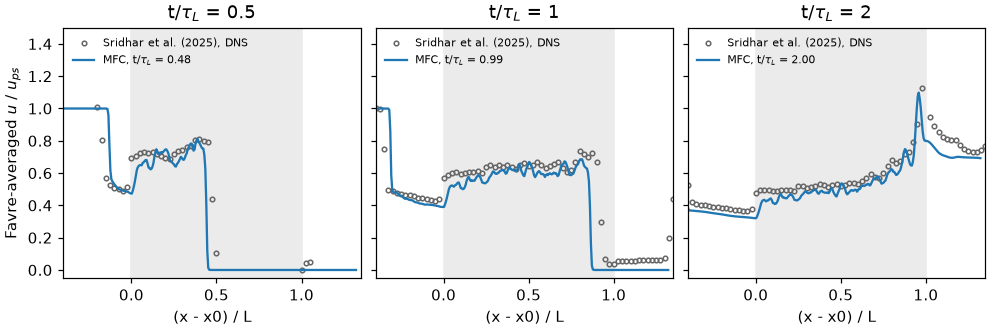
Mean absolute difference from the DNS profile in units of the post-shock velocity at the saves nearest the three panels (t/tau_L = 0.5, 1, 2): 0.047, 0.050, 0.047 (seed 1) and 0.038, 0.050, 0.052 (seed 2). A single sphere at Ms 1.22 (inviscid slip wall) gives a peak drag coefficient of 7.64 at 12 and 7.72 at 14 cells per diameter against 7.49 (Mehta et al. 2016), +1.9 % and +3.1 %; with the no-slip ghost velocity and inviscid fluxes the peak is 8.9 (+19 %).
A periodic, uniform bubbly mixture (bubbles_euler, one bubble size R0 = 50 um, void fraction 1e-5, water) is held at 1000 times the bubble's equilibrium pressure, so every cell holds the same collapsing bubble. The bubble ODE (Keller-Miksis, polytropic gas, surface tension, liquid viscosity) is sub-stepped adaptively (adap_dt). check_collapse.py integrates the same Keller-Miksis equation in Python at a constant far-field pressure, and again driven by MFC's own cell pressure, and prints the collapse time, the minimum radius and max |R_MFC - R_KM|/R0, with Rayleigh's collapse time 0.915 R0 sqrt(rho_l/(p_inf - p_v)) for scale.
./mfc.sh run examples/0D_bubblecollapse_adap/case.py -t pre_process simulation post_process -n 1 python3 examples/0D_bubblecollapse_adap/check_collapse.py examples/0D_bubblecollapse_adap
case.py takes --dt (time step and save interval, default 1e-4 in R0/sqrt(p0/rho0)) and --adap-tol (default 1e-4). Measured with GNU 13.3 (CPU, one rank):
| run | collapse time / t_Rayleigh | vs KM, constant p | max abs(R - R_KM)/R0, constant p | same, KM driven by MFC's p |
|---|---|---|---|---|
| default | 1.0425 | +7.2e-4 | 4.0e-3 | 8.9e-5 |
| --adap-tol 1e-6 | 1.0425 | +7.2e-4 | 4.0e-3 | not run |
| --dt 2.5e-5 | 1.0414 | +1.5e-4 | 4.2e-3 | 8.0e-5 |
The collapse time is the parabola through the three saves around the minimum, so it moves with the save interval for both MFC and the ODE. The 4e-3 difference from the constant-pressure ODE is the two-way coupling: as the void collapses the mixture pressure falls by 0.27 %, and the ODE driven by that pressure agrees to 9e-5 R0. An NVIDIA A100 run (NVHPC 25.11, OpenACC) gives the same numbers to the digits shown. See Validation: Bubble Dynamics.
A 2D flat plate pitching about its leading edge, 0 → 45° on an Eldredge smoothed ramp (a = 21), K = π/8 (case C1), Re_c = 300, Ma 0.2, plate thickness 2.5 % of chord. There is a published measurement to compare against:
Jantzen, Taira, Granlund & Ol, Phys. Fluids 26, 053606 (2014), Fig. 10, 2D panel, curve C1.
C_L = F_y / (½ ρ U² c) = 2 F_y here, with ρ = U = c = 1 and MFC's 2D force being per unit depth.
This case exists to measure the defect in #1849, not to fix it. Whoever does fix it needs a number to move.
NCELL sets how many cells lie across the plate thickness. The physical problem is identical at every level — same chord, same thickness, same domain, same times — so the sweep isolates the resolution requirement from any change of geometry, which a thickness sweep would confound.
SUMMARY=1 python3 case.py prints the grid and step count without running anything.
| cells across the thickness | peak C_L | C_L at t = 4 | rms difference from the reference |
|---|---|---|---|
| 2 | 6.413 | 1.209 | 20.9 % |
| 4 | 4.682 | 1.271 | 33.5 % |
| 8 | 4.458 | 1.111 | 27.9 % |
| 16 | 4.833 | 1.005 | 26.9 % |
| reference | 6.998 | 1.521 | — |
Two separate readings:
The peak converges from four cells up. 4.682, 4.458 and 4.833 across a fourfold refinement — a spread of 8 % with no trend. Two cells is genuinely under-resolved and 35 % out; four is enough. So a thin body does not need ten or more cells before the immersed boundary resolves it, which is worth knowing on its own for cost estimates.
The disagreement with the reference does not shrink. The last column sits at 27–34 % at every resolution and shows no sign of falling as the grid refines. That is the measurement that matters for #1849: it rules out under-resolution as the explanation and points at the force computation itself.
The obvious cheap test — a symmetric body whose true force is exactly zero — does not apply to a pitching plate, whose lift is large and unknown. For that style of check see examples/2D_ibm_force_decomposition (a cylinder, whose lift must be zero) and examples/3D_ibm_neighborhood_radius. This case trades the exact reference for a published one.
An immersed-boundary cylinder with a slip wall (patch_ib(1)slip = T) in inviscid gas. Two checks of the ghost-cell wall, selected by --mode:
check_slip.py reads the run and prints the numbers of the tables. The results, limits and the slip-wall cases that fail are on the Validation: Slip Immersed Walls page.
./mfc.sh run examples/2D_ibm_slip_cylinder/case.py -t pre_process simulation post_process -n 1 -- --steps 0 --cells_per_R 16 --half 8 --mass_relax 1 python3 examples/2D_ibm_slip_cylinder/check_slip.py examples/2D_ibm_slip_cylinder --case-args '--steps 0 --cells_per_R 16 --half 8 --mass_relax 1' ./mfc.sh run examples/2D_ibm_slip_cylinder/case.py -t pre_process simulation post_process -n 1 -- --mode vortex --mach 0.3 --cells_per_R 20 --ip_interp 2 --ccst python3 examples/2D_ibm_slip_cylinder/check_slip.py examples/2D_ibm_slip_cylinder --case-args '--mode vortex --mach 0.3 --cells_per_R 20 --ip_interp 2 --ccst'
Each run writes into the example directory, so check it before the next one. --steps 0 runs one flow-through of the box in leak mode; the default 100 fixed steps on 8 cells per radius is the CI-sized case. The suite runs it as 2D -> IBM -> Slip Cylinder -> Mass Budget (the golden holds the conservative fields; skipped in the single-precision lane). On an NVIDIA A100 --mass_relax 1 had no effect in this case (see the page); the CPU result is the one in the tables.
Gas mass of the fluid cells, change relative to the first save, one flow-through of a box of side 16 R (GNU 13, one rank, master at 0cdfdf02a):
| cells per R | ib_mass_relax | half a flow-through | one flow-through |
|---|---|---|---|
| 16 | 0 (what -1 gives for a fixed body) | +1.69e-3 | +3.61e-3 |
| 16 | 30 | +4.3e-5 | +5.8e-5 |
| 16 | 1 | -5.2e-14 | -1.2e-13 |
| 32 | 0 | +1.00e-3 | +2.08e-3 |
| 32 | 1 | -1.0e-13 | -2.3e-13 |
See the page for the exact-vortex tables (M = 0.3 and 0.6, 10 to 40 cells per R, four option sets). The first-band pressure error of the M = 0.3 vortex at 10 / 20 / 40 cells per R is 3.28e-2 / 1.58e-2 / 6.38e-3 with the defaults and 4.51e-3 / 1.22e-3 / 2.40e-4 with ib_ip_interp = 2 and ib_slip_ccst = T.
A spherical-cap transducer (acoustic(1)support = 6, cyl_coord = T) in water: radius of curvature F = 0.54 mm, aperture 0.8 mm, apex on the axis at x = 0.06 mm, one Gaussian pulse ($\sigma_t$ = 20 ns, delay 100 ns, mag = 1 Pa). The converging wave focuses on the axis at x = 0.6 mm, so the case tests the axisymmetric source, the geometric source terms and the axis together.
On the axis the exact linear field of a cap with uniform normal velocity (O'Neil 1949) is
$$ p(z, t) = \frac{F}{F - z}\left[p_0(t - z/c) - p_0(t - R_e/c)\right], \quad R_e = \sqrt{a^2 + (z - h)^2}, \quad h = F - \sqrt{F^2 - a^2}, $$
which at the focus is $(h/c)\,dp_0/dt$: two peaks of $\pm\,\mathrm{mag}\,h/(c\sigma_t\sqrt{e})$ = ±3.60 Pa here. check_focus.py reads the pressure of a probe in the cell just past the focus (written every step with --probe) and prints the peak values and times against this solution and the L2 error of the signal.
./mfc.sh run examples/2D_acoustic_support6_axisym/case.py -t pre_process simulation -n 1 -- --refine 4 --probe python3 examples/2D_acoustic_support6_axisym/check_focus.py examples/2D_acoustic_support6_axisym --case-args "--refine 4 --probe"
--refine k multiplies the 100 x 50 cells by k and divides dt by k. The peaks converge to the O'Neil value (−0.4 % at k = 8); see Validation: Cylindrical Coordinates and Stretched Grids.
Reference: See Example 4.18.
A.S. Chamarthi, S.H. Frankel, A. Chintagunta, Implicit gradients based novel finite volume scheme for compressible single and multi-component flows, arXiv preprint arXiv:2106.01738 (2021).
A hot, inert cylinder (an immersed boundary with thermal_bc = 3) sits in a cold air stream. The body is one lumped solid: a single temperature Twall, advanced every step by the heat the gas takes from it,
m c_s dT/dt = Q_in + P - eps sigma A (T^4 - T_rad^4)
with Q_in the energy flux through the faces between the body's cells and the gas (see thermal_bc in the case documentation). Here P (heat_power) and the radiation term are zero and the surface is inert, so the body only cools. ib_heat_wrt writes the heat rate and Twall of every step to D/ib_heat.dat.
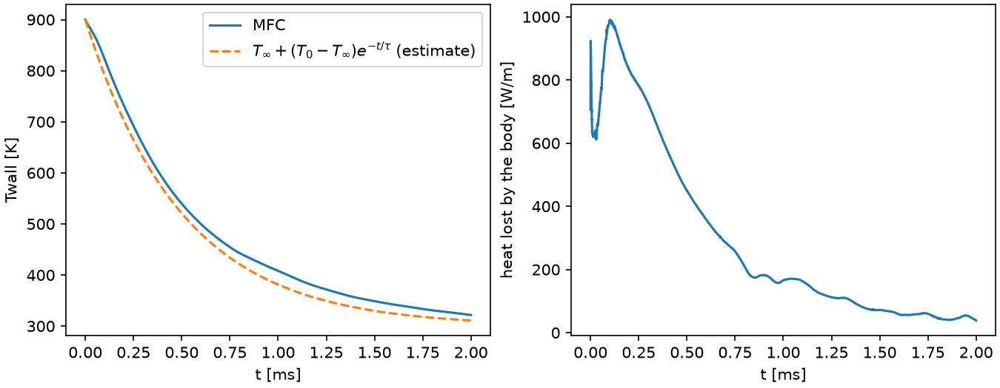
Left: the wall temperature of the lumped body (solid) against the exponential estimate (dashed). Right: the heat the body loses per unit length. The first 0.1 ms is the cylinder meeting the gas: the heat rate rises as the thermal layer and the wake develop, then decays as the body cools. Over the 2 ms run the body goes from 899.9 K to 321.8 K and loses 0.583 J/m, and the step-by-step balance m c_s dT = Q dt closes to a largest per-step imbalance of 2.5e-10 J/m (run on an AMD MI250X; the plot is what heat_balance.py writes).
Air at 1 atm and 300 K flows at 20 m/s (Re_D about 800 at the film temperature) past a cylinder of diameter 2 mm and initial temperature 900 K. The gas is the reduced 11-species mechanism shared with 2D_ibm_reacting_surface, with transport and species diffusion on and reactions off; the flow numerics are the ones of that example. The 20-flow-through run takes about 11000 steps on a 168 x 120 grid.
The heat capacity is deliberately tiny. A real metal rod of this size cools over seconds, about 10^4 flow-through times; case.py instead sets cp_solid so the thermal time is a quarter of the simulated 2 ms, using a Churchill-Bernstein Nusselt number for the film coefficient, and prints the estimate. The dashed curve in the plot is that exponential. It is an order-of-magnitude estimate: the actual coefficient is not uniform around the cylinder and changes as the wake develops, so the computed curve is not expected to lie on it.
./mfc.sh run examples/2D_ibm_lumped_wall/case.py -t pre_process simulation -n 1 -g 0 --gpu acc cd examples/2D_ibm_lumped_wall && python3 heat_balance.py
Use --gpu mp for an OpenMP-offload build, or drop the GPU flags on a CPU build. The plot is written to lumped_wall-2D_ibm_lumped_wall-example.png.
One temperature per body is valid only while the Biot number is small; the geometry and mass are fixed (no recession); the update is explicit; the body must be a non-moving circle, sphere or cylinder; and the chemistry module is required even though no reaction occurs. The balance has been checked against first-order estimates, not an analytic solution.
examples/2D_ibm_cylinder_drag_nu runs the same lumped body (--thermal_bc 3 --rho_cs <J/m^3/K>) in the Re 20 and 40 cross flow of that example, and check_lumped_cooling.py compares its decay with the time constant rho_s c_s D^2 / (4 Nu k_f) that the Nusselt number of two fixed-wall twin runs implies. The results are on the Validation: Solid-Wall Thermal Models page.
Reference:
Panchal et. al., A Seven-Equation Diffused Interface Method for Resolved Multiphase Flows, JCP, 475 (2023)
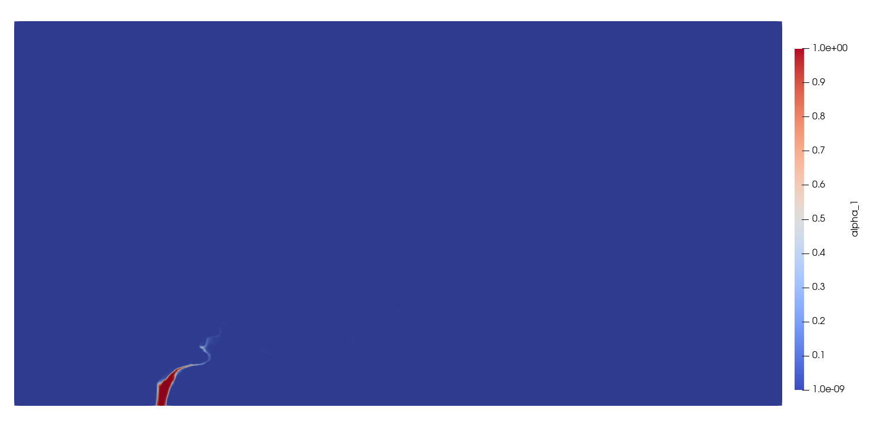
A stoichiometric H2/air flame (1 atm, 300 K, h2o2.yaml, mixture-averaged diffusion and conduction, viscous) in a 3.2 mm square is hit by a counter-rotating Lamb-Oseen vortex pair. The flame starts at x = 1.8 mm as the Cantera FreeFlame profile (flame_profile.txt, written by make_profile.py, flame speed S_L = 2.3315 m/s, thermal thickness 0.33 mm); the pair (circulation +-0.05 m^2/s, core radius 0.25 mm, centres 0.8 mm apart, y-periodic image sums, cyclostrophic pressure) starts at x = 0.9 mm and moves toward it. The boundaries are a slip wall at x = 0, the characteristic subsonic outflow at x = 3.2 mm (bc_xend = -8, GRCBC relaxation to 1 atm) and periodic in y. The time step is fixed (2.632e-9 s) on every grid, so the first-order error of the split chemistry is the same on all grids. case.py writes the initial condition for the chosen grid to IC/ at the first run (read with hcid = 274).
./mfc.sh run examples/2D_flame_vortex_pair/case.py -n 1 -t pre_process simulation post_process -- --N 128 --tend 1e-4 python3 examples/2D_flame_vortex_pair/analyze_fv.py RUN64 RUN128 RUN256 # convergence table: copies of this directory, one per grid ./mfc.sh run examples/2D_flame_vortex_pair/case.py -n 1 -t pre_process simulation post_process -- --N 256 --ny 32 --gamma 0 --tend 1e-4 python3 examples/2D_flame_vortex_pair/analyze_fv.py RUN --flat # flat-flame speed against S_L
The case writes its output next to case.py: copy the directory (keeping fv_common.py and flame_profile.txt) for each grid. analyze_fv.py reads the Silo output and prints, at 40, 70 and 100 us, the heat release Q, the H2O mass and the length of the T = 1200 K isoline per grid with the observed order and Richardson value; with --flat it prints the displacement speed of the vortex-free strip against S_L. case.py takes --N, --ny, --gamma, --tend, --frames, --dt and --set KEY=VAL.
Measured on master at 0cdfdf02a (fixed dt = 2.632e-9 s, to 70 us):
| Quantity | t [us] | 64 x 64 | 128 x 128 | 256 x 256 | earlier (64, 128, 256, 512) |
|---|---|---|---|---|---|
| Q [W/m] | 40 | 18674.5 | 18660.7 | 18632.6 | 18675.1, 18662.2, 18632.8, 18618.6 |
| 70 | 23317.2 | 23367.4 | 23401.6 | 23332.1, 23367.6, 23403.3, 23411.9 | |
| H2O mass [1e-7 kg/m] | 40 | 1.52564 | 1.52500 | 1.52421 | 1.525664, 1.525013, 1.524224, 1.523798 |
| 70 | 1.61155 | 1.61153 | 1.61110 | 1.611683, 1.611551, 1.611127, 1.610895 | |
| flame length [mm] | 40 | 3.5284 | 3.5239 | 3.5243 | 3.52840, 3.52388, 3.52434, 3.52454 |
| 70 | 5.0647 | 5.0801 | 5.0845 | 5.06566, 5.08060, 5.08497, 5.08562 |
The 64 x 64 run to 100 us gives Q = 32008.3 W/m, H2O mass 1.73517e-7 kg/m and flame length 7.14806 mm (earlier 32013.4, 1.735351e-7, 7.14902). Every value agrees with the earlier study to 6e-4 or better. The 64, 128 and 256 runs are the 64 x 64 and 128 x 128 runs on the CPU (NVHPC 25.11) and the 256 x 256 run on an NVIDIA A100 (NVHPC 25.11), all in double precision.
Observed orders from 64, 128 and 256 are not in the asymptotic range (the heat release at 40 us is non-monotone in the grid: -1.0 at 40 us, +0.6 at 70 us; the flame length at 70 us gives 1.8), as in the earlier study, where the orders 1.0 (40 us) and 2.1 (70 us) came from the three finest grids (128, 256, 512). The 512 x 512 grid was not run here.
Flat flame (--N 256 --ny 32 --gamma 0, a 256 x 32 strip at the 256 x 256 spacing, 26.6 thousand steps to 70 us, NVIDIA A100, NVHPC 25.11): the displacement speed over 30 to 70 us (41 saves one microsecond apart, x_f fitted linearly, u_a and rho_a at T_up + 10 K) is S_d = 2.3393 m/s against the Cantera S_L = 2.3315 m/s, +0.33 % (earlier: +0.07 % over 30 to 90 us, +0.05 % in 3D).
The suite registers 2D -> Chemistry -> Flame Vortex Pair (64 x 64, 100 steps). Results and limits: Flame-vortex interaction.
Reference:
Trojak, W., & Dzanic, T. Positivity-preserving discoutinous spectral element method for compressible multi-species flows. arXiv:2308.02426
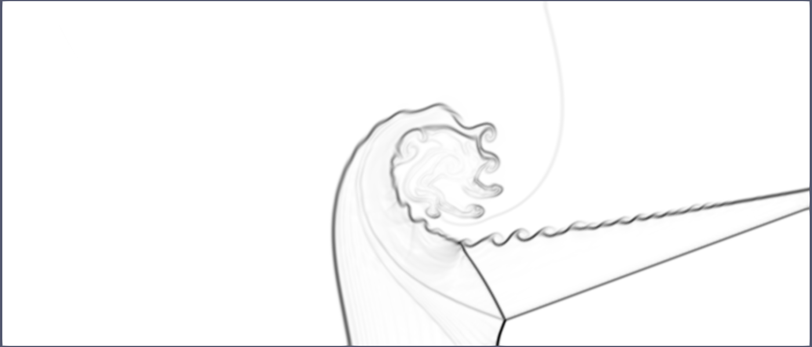
Reference: See Example 4.8.
A.S. Chamarthi, S.H. Frankel, A. Chintagunta, Implicit gradients based novel finite volume scheme for compressible single and multi-component flows, arXiv preprint arXiv:2106.01738 (2021).
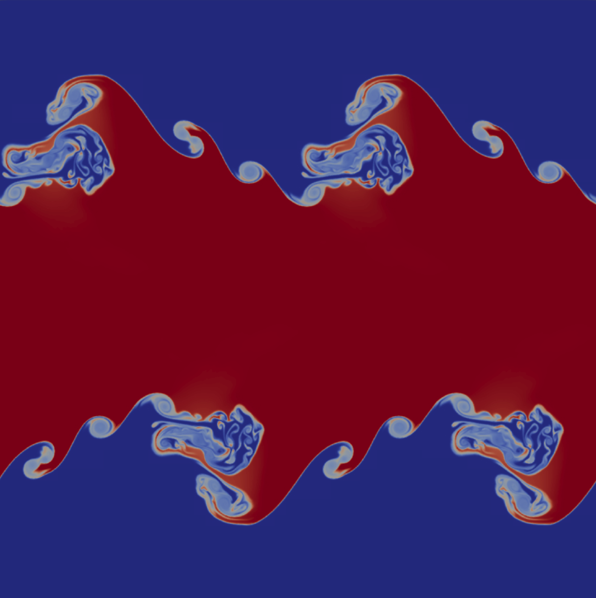
mpp_lim is off: this case runs without it, and it breaks pressure equilibrium at material interfaces (see mpp_lim in Case Files).
A Mach 10 cylindrical blast wave, released from a high-pressure driver at the origin, hits a half-ring of 1612 magnesium particles (radius 50 µm) in air. It uses the Euler-Lagrange solid-particle solver (particles_lagrange) with two-way coupling, Osnes quasi-steady drag, pressure-gradient force and added mass.
gen_particles.py writes the particles (seeded random placement without overlaps, radius 11.05–12.65 mm) to input/particles.dat; case.py calls it when pre_process runs, or run it yourself with python3 gen_particles.py.
Density-gradient schlieren |∇ρ|/ρ with the particles (white) at t = 50 µs.
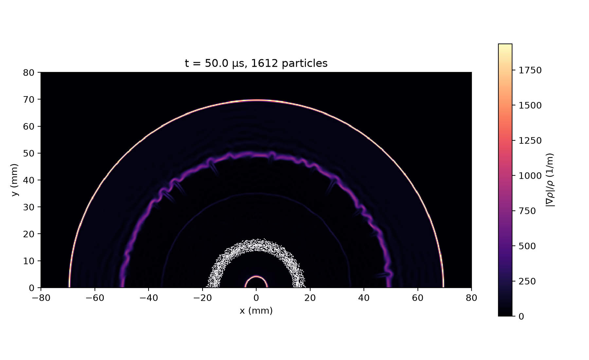
Validates the yield-stress term of MFC's Herschel-Bulkley non-Newtonian viscosity against a closed-form analytic Poiseuille profile. Demonstrates the Bingham regime (nn = 1, tau0 > 0): a rigid plug of uniform velocity forms near the centerline, where the shear stress falls below the yield stress.
Single Papanastasiou-regularized Herschel-Bulkley fluid with unit flow index, so K = mu is a plain Newtonian consistency and the only non-Newtonian effect is the yield stress:
| Parameter | Value | Role |
|---|---|---|
| fluid_pp(1)K | 5.0e-2 | n = 1 -> plain dynamic viscosity mu |
| fluid_pp(1)nn | 1.0 | flow index = 1 (Bingham, no power-law) |
| fluid_pp(1)tau0 | 4.0e-3 | yield stress -> plug half-width y0 = 0.4 H |
| fluid_pp(1)hb_m | 1.0e4 | sharp Papanastasiou yield regularization |
| fluid_pp(1)mu_min/mu_max | 1e-6 / 1.0 | viscosity clamp (rigid plug) |
Driven by g_x = 0.1, rho = 1, pres = 10, giving tau_w = rho*g*H = 1e-2, u_plug ~ 3.6e-3 and Mach ~1e-3. Channel L_y = 0.2, H = 0.1, no-slip walls, periodic in x.
The shear stress is tau = rho*g*(H - y); the fluid only flows where |tau| > tau0. With n = 1, K = mu, tau_w = rho*g*H > tau0:
plug half-width : y0 = tau0/(rho*g)
sheared region : u(y) = (1/(2*mu*rho*g)) *
[ (tau_w - tau0)^2 - (rho*g*(H-y) - tau0)^2 ] (|y-H| >= y0)
plug : u_plug = (1/(2*mu*rho*g)) * (tau_w - tau0)^2 (|y-H| < y0)
The signature of a correct yield term is the flat plug of uniform velocity within |y - H| < y0. Requires tau_w > tau0 for any flow.
./mfc.sh run examples/2D_bingham_poiseuille_nn/case.py -n 2 python examples/2D_bingham_poiseuille_nn/compare_analytic.py
Relative L2 error vs. the analytic Bingham profile: 2.5% (2-rank run, steady state confirmed). A plug forms at the centerline with half-width matching the analytic y0 = tau0/(rho*g) = 0.4 H.
Reference: See Example 4.13.
A.S. Chamarthi, S.H. Frankel, A. Chintagunta, Implicit gradients based novel finite volume scheme for compressible single and multi-component flows, arXiv preprint arXiv:2106.01738 (2021)., see Example 4.13
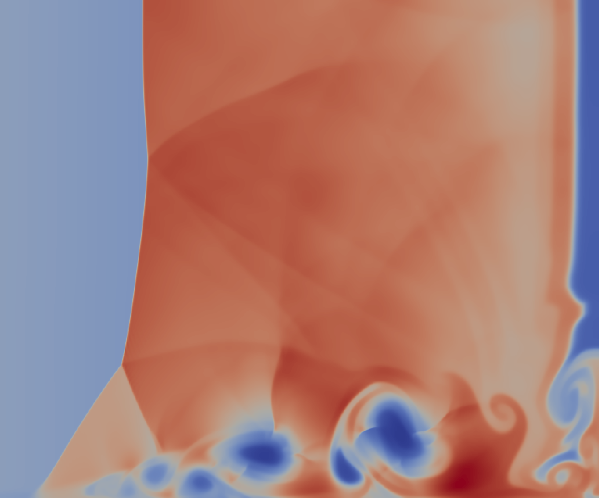
mpp_lim is off: this case runs without it, and it breaks pressure equilibrium at material interfaces (see mpp_lim in Case Files).
Shu's isentropic vortex ( \(\epsilon = 5\), \(\gamma = 1.4\)) carried by a uniform stream \(u = 1\) across a periodic \([-10, 10]^2\), from \(x = -3\) to \(x = 3\) at \(t = 6\). The exact solution is the initial vortex translated, so the density error at the end measures the accuracy of the coarse/fine coupling for a smooth flow. Every level starts from the exact cell averages of the conserved variables (3x3-point Gauss in the patch expressions, which use dx, dy).
All runs at one --N take the same fine-level step (CFL 0.4 on the 2N grid), so a uniform run at 2N, an AMR run and a uniform run at N differ only in space.
check_vortex.py reads the last save (restart_data/lustre_<step>.dat and the fine blocks in restart_data/lustre_amr_<step>.dat; parallel_io = T) and compares the density with the exact cell averages (4x4-point Gauss) on the composite grid: the fine cells where a block covers a point, level 0 elsewhere. It prints L1 (area mean) and Linf, the largest error within 3 level-0 cells of a block edge ("seam") and elsewhere ("away"), the refined share of the domain, and the observed order between successive --N of one kind.
The checkers import mfc.viz, so run them in MFC's Python environment (source build/venv/bin/activate after any ./mfc.sh command).
Each run writes next to case.py: copy the directory per run. Results and limits: the AMR section of the validation page.
Qualitative demonstration of MFC's Herschel-Bulkley non-Newtonian viscosity in a recirculating flow. A shear-thinning fluid fills a unit square cavity driven by a moving top lid. Unlike the Poiseuille examples, this case has no closed-form analytic solution — it is a qualitative demonstration of the expected shear-thinning trend (a primary vortex center shifted toward the moving lid, with stronger near-wall velocity gradients relative to the Newtonian case).
Two identical Papanastasiou-regularized Herschel-Bulkley fluids (a two-fluid setup sharing one rheology), pure power law (tau0 = 0):
| Parameter | Value | Role |
|---|---|---|
| fluid_pp(i)K | 1.0e-2 | consistency index; Re_eff = 1/K = 100 at unit shear rate |
| fluid_pp(i)nn | 0.5 | flow index < 1 -> shear-thinning |
| fluid_pp(i)tau0 | 0.0 | no yield stress (pure power law) |
| fluid_pp(i)hb_m | 1000.0 | Papanastasiou regularization parameter |
| fluid_pp(i)mu_min/mu_max | 1e-6 / 1.0 | viscosity clamp |
Unit square [0,1]^2, m = n = 99 (coarse smoke-run grid), all walls no-slip with the top lid moving at bc_yve1 = 0.5. Effective Reynolds number Re_eff = 1/K = 100 at unit shear rate; the conventional lid-based Reynolds number rho*U*L/mu(1) = 0.5/1e-2 = 50 with U = 0.5 and mu(1) = K.
The auto-registered CI test of this example is truncated to 50 time steps and serves as smoke coverage only, not a physics anchor.
Incompressible recirculating cavity flow with the shear-dependent power-law viscosity mu = K*gamma_dot^(n-1). With n < 1 the fluid thins under the strong shear beneath the lid and in the corner boundary layers, while the slow cavity core stays comparatively viscous.
What to look for (qualitative, no analytic match): a primary recirculating vortex whose center, relative to a Newtonian cavity at the same Reynolds number, is shifted toward the moving lid, with stronger near-wall velocity gradients — the expected shear-thinning trend. Do not expect a quantitative error; the committed grid (m = n = 99) is intentionally coarse. For quantitative comparison use m = n = 499 or finer with a longer t_step_stop.
./mfc.sh run examples/2D_lid_driven_cavity_nn/case.py -n 2
Post-process and inspect the velocity / vorticity (omega_wrt(3)) fields; there is no compare_analytic.py for this qualitative case.
A fixed no-slip body (immersed boundary) in supersonic flow, an impulsive start with extrapolation on every face, inviscid. The detached bow shock settles at a stand-off distance from the body that depends on the Mach number and the body shape, and the resolution needed to place it is high. standoff.py measures the distance on the stagnation line (where the pressure first reaches the mean of the free-stream and post-shock pressures, scanning inward from the inflow) and compares it with Billig's correlation. bodyfitted_sphere.py is an independent reference: an axisymmetric Euler solver on a body-fitted polar mesh around the sphere (NumPy, no immersed boundary). The full results and limits are on the Validation: Bow-Shock Stand-Off of a Cylinder and a Sphere page.
./mfc.sh run examples/2D_ibm_cylinder_standoff/case.py -t pre_process simulation -n 1 --gpu -- \
--dim 3 --cells_per_D 40 --steps 0 --tstar 40 --frames 8
python3 examples/2D_ibm_cylinder_standoff/standoff.py examples/2D_ibm_cylinder_standoff
python3 examples/2D_ibm_cylinder_standoff/bodyfitted_sphere.py --mach 2 --nr 160 --nphi 160
--dim 2 is the cylinder (the default), --dim 3 the sphere; --mach, --xu, --xd and --hy set the Mach number and the domain (a cylinder at Mach 1.5 needs --xu 3.5, because its shock stands about 1.5 D from the body). The output goes next to case.py: copy the directory for each run. A build without MPI adds --serial_io. Without arguments the case is the CI-sized test: the cylinder at Mach 2 with 16 cells per diameter in a 4 D box and 150 fixed steps, before the shock has settled; it runs in the suite as 2D -> IBM -> Bow Shock Standoff.
NVIDIA A100, NVHPC 25.11, double precision, master at 0cdfdf02a. Sphere, inviscid, no-slip, ib_ip_interp = 1, domain [-1.5 D, 2.5 D] x [-2 D, 2 D]^2, run to t u/R = 40, the stand-off \(\Delta/R\) averaged over the last three of eight saves. The shock position oscillates by 0.003-0.008 R between saves at every grid. "Body-fitted" is bodyfitted_sphere.py at 160 x 160 cells (M 1.5: 0.6131, M 2: 0.3498, M 3: 0.2179).
| M | cells/D | Delta/R | Billig | error vs Billig | error vs body-fitted |
|---|---|---|---|---|---|
| 1.5 | 20 | 0.6988 | 0.6036 | +15.8 % | +14.0 % |
| 1.5 | 40 | 0.6650 | 0.6036 | +10.2 % | +8.5 % |
| 2 | 20 | 0.4167 | 0.3215 | +29.6 % | +19.1 % |
| 2 | 30 | 0.4025 | 0.3215 | +25.2 % | +15.1 % |
| 2 | 40 | 0.3939 | 0.3215 | +22.5 % | +12.6 % |
| 2 | 60 | 0.3776 | 0.3215 | +17.5 % | +7.9 % |
| 3 | 20 | 0.2482 | 0.2050 | +21.1 % | +13.9 % |
| 3 | 40 | 0.2469 | 0.2050 | +20.4 % | +13.3 % |
The body-fitted solver gives 0.3489 and 0.3498 R at M 2 on 80 and 160 cells (Billig is 8.8 % lower), 0.6130 and 0.6131 at M 1.5, and 0.2153 and 0.2179 at M 3 (not converged to better than about 1 %).
The cylinder (--dim 2, GNU 13 CPU, run to t u/R = 60) does not settle in that time: at Mach 2 the stand-off is 1.414 R at 20 cells/D (Billig 1.241 R, +14.0 %), 1.464 R at 40 cells/D, still rising (1.425, 1.458, 1.508 R over the last three saves), and 1.377 R at 80 cells/D (+11.0 %, also still rising). The sphere is the validated quantity; the cylinder is the CI-sized regression case and a slower, larger-subsonic-region problem.
Resolution-limited, not a measurement problem: the shock stands 4-12 cells from the sphere at these grids. Mach 3 is unsteady (the stand-off oscillates by 0.007-0.036 R) and was not examined further. Inviscid only; no reacting variant (see 2D_ibm_reacting_surface).
Reference:
Woodward, P. (1984). The numerical simulation of two-dimensional fluid flow with strong shocks. Journal of Computational Physics, 54(1), 115–173. https://doi.org/10.1016/0021-9991(84)90140-2
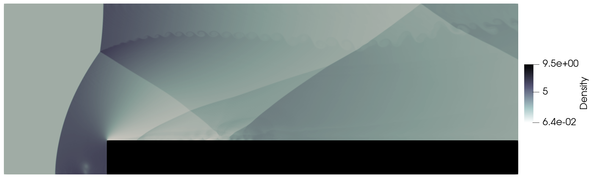
Reference:
Coralic, V., & Colonius, T. (2014). Finite-volume Weno scheme for viscous compressible multicomponent flows. Journal of Computational Physics, 274, 95–121. https://doi.org/10.1016/j.jcp.2014.06.003
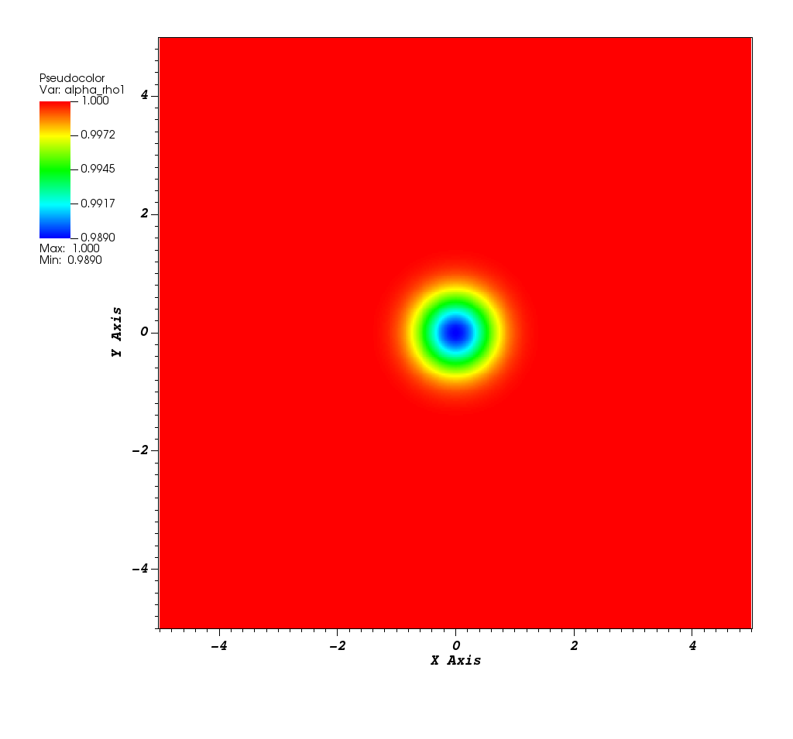
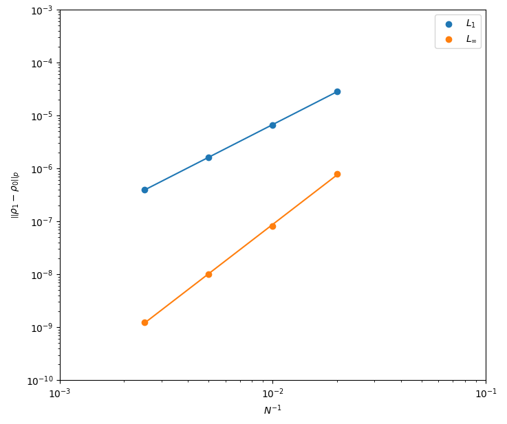
case.py --convect translates the vortex at (1, 0.5) through a periodic box $[-5, 5]^2$ on a uniform $N \times N$ grid, started from exact conservative cell averages (hcid = 283); it takes -N, --order, --scheme wenojs|wenom|wenoz|teno, --cfl, --t-end and --time-stepper. check_vortex.py prints the density error against the exact translated vortex and the observed order:
./mfc.sh run examples/2D_isentropicvortex/case.py -t pre_process simulation -n 1 -- --convect -N 128 --order 5 python3 examples/2D_isentropicvortex/check_vortex.py <run N=64> <run N=128> <run N=256>
Every WENO and TENO order converges at second order on this flow (L1 1.37e-5 at N = 256 for WENO5 and WENO7 alike). That is the expected order: MFC reconstructs primitive variables from cell averages, and its dimension-by-dimension fluxes use one point per face; both limit nonlinear smooth flows to second order (#2464). Results and limits: Validation: Isentropic Vortex Order of Accuracy and Taylor-Green Decay.
A Mach 1.66 planar shock, held by a Dirichlet inflow, hits a 2 mm thick curtain of glass particles (radius 57.5 µm, volume fraction 0.21) in 82.7 kPa air between slip walls. It uses the Euler-Lagrange solid-particle solver (particles_lagrange) with two-way coupling, Osnes quasi-steady drag, pressure-gradient force and added mass.
The setup follows the multiphase shock tube experiment of Wagner et al. (2012):
J. L. Wagner, S. J. Beresh, S. P. Kearney, W. M. Trott, J. N. Castaneda, B. O. Pruett, and M. R. Baer, "A multiphase shock tube for shock wave interactions with dense particle fields", Experiments in Fluids, vol. 52, no. 6, pp. 1507–1517, 2012. https://doi.org/10.1007/s00348-012-1272-x
gen_particles.py writes the particles (seeded, uniform in the curtain band) to input/particles.dat; case.py calls it when pre_process runs, or run it yourself with python3 gen_particles.py. In 2D each particle stands for a slab of depth charwidth, so projected particles may overlap.
Density-gradient schlieren |∇ρ|/ρ with the particles (white) at t = 500 µs.
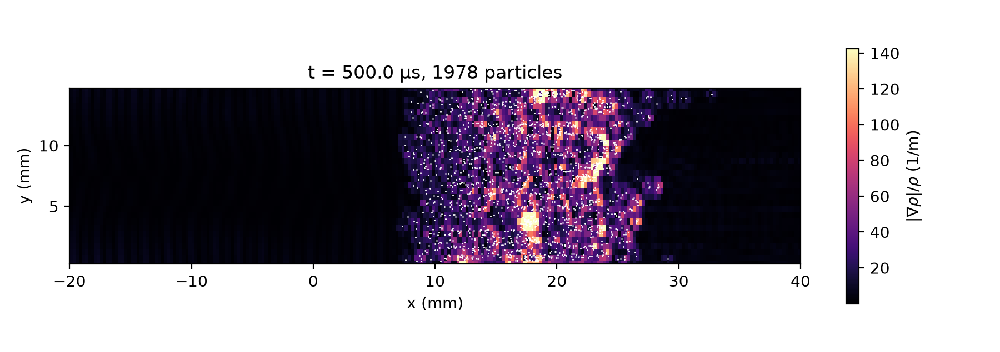
Reference:
Chamarthi, A., & Hoffmann, N., & Nishikawa, H., & Frankel S. (2023). Implicit gradients based conservative numerical scheme for compressible flows. arXiv:2110.05461
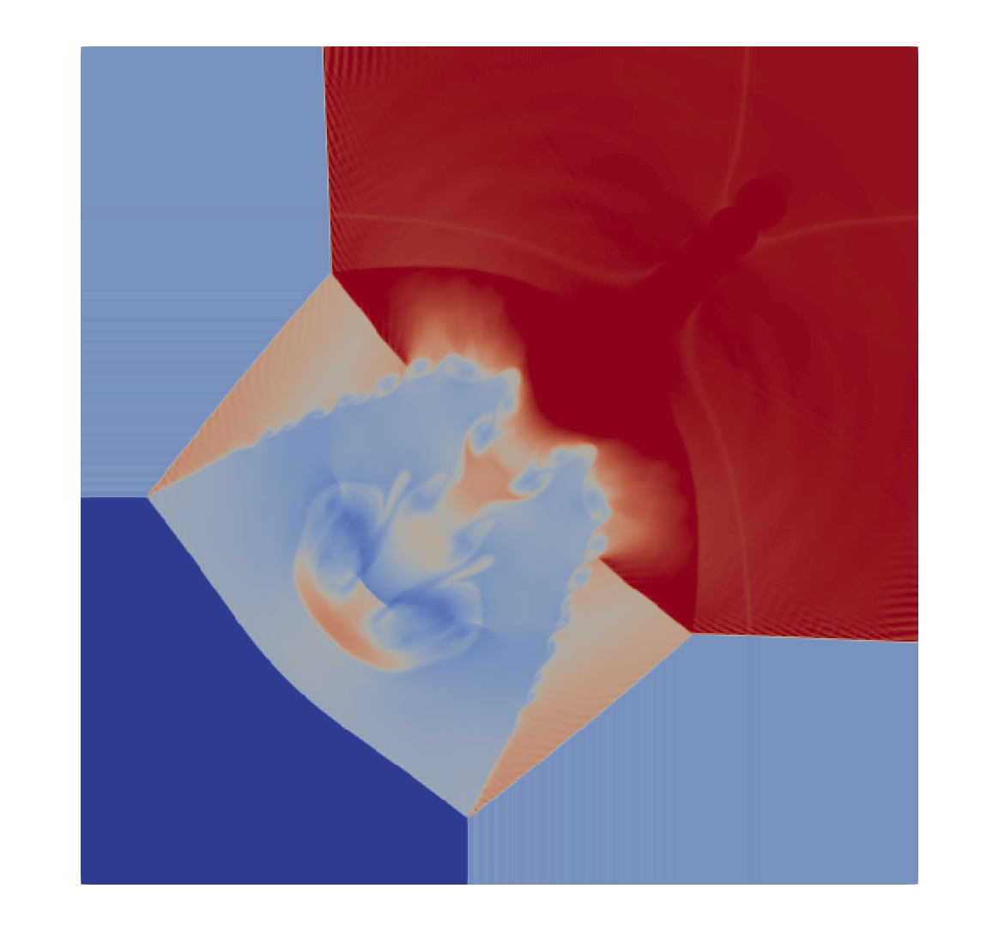
A hot carbon cylinder (surface_reaction = 1, the surface solve of 2D_ibm_reacting_surface) sits in quiescent air in a fully periodic box of side 6 D. No gas can enter or leave, so the box gains mass only through the cylinder's surface, and the mass it gains must equal the mass the surface gasifies. The inert species (N2) must not change at all.
mass_budget.py closes that budget from the run's output:
gain = M(t) - M(t_1) gas mass in the fluid cells gasif = integral of sum(area * mdot) over the body's surface records (ib_surface_wrt), trapezoid rule defect = (gain - gasif) / gasif leak = (M_N2(t) - M_N2(t_1)) / gasif
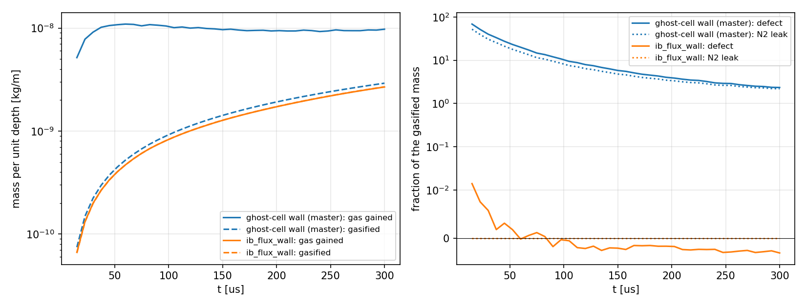
Left: the gas mass gained (solid) and the mass gasified (dashed), for the default ghost-cell wall (blue) and with ib_flux_wall = T (orange). Right: the defect and the N2 leak as fractions of the gasified mass (the axis is linear below 1e-2 and logarithmic above).
With the default wall, the faces between the fluid and the body carry the Riemann and diffusion fluxes of the ghost state, which the ghost fill does not tie to the surface balance. The gas gains 3 to 69 times the mass the surface gasifies, and N2, which no surface reaction touches, changes by multiples of it. With ib_flux_wall = T those faces carry the surface solve's own rates: the defect is 1.6e-2 at the first save and below 0.4% afterwards, and the N2 leak stays at 1e-10 of the gasified mass.
| t [us] | gained, default [kg/m] | gasified, default [kg/m] | defect, default | N2 leak, default | defect, flux wall | N2 leak, flux wall |
|---|---|---|---|---|---|---|
| 15 | 5.2e-9 | 7.4e-11 | 68 | 52 | 1.6e-2 | 4e-10 |
| 30 | 9.1e-9 | 2.2e-10 | 40 | 31 | 3.4e-3 | 0 |
| 60 | 1.09e-8 | 5.2e-10 | 20 | 15 | -1.2e-3 | 6e-11 |
| 105 | 1.01e-8 | 9.7e-10 | 9.4 | 7.5 | 1.5e-4 | 3e-11 |
| 300 | 9.7e-9 | 2.9e-9 | 2.3 | 2.2 | -1.8e-3 | -1e-11 |
The default-wall column is the behavior of the solver without the option, which was also run on an unmodified build of master and gives the same table to all printed digits. Run on an AMD MI250X; an NVIDIA A100 gives the same table to the digits shown, and 1 and 2 ranks (the rank seam through the cylinder) agree too.
Each run writes into the example directory, so save the table after each one:
./mfc.sh run examples/2D_ibm_wall_mass_budget/case.py -t pre_process simulation -n 1 --gpu mp python3 examples/2D_ibm_wall_mass_budget/mass_budget.py examples/2D_ibm_wall_mass_budget --csv off.csv ./mfc.sh run examples/2D_ibm_wall_mass_budget/case.py -t pre_process simulation -n 1 --gpu mp -- --flux_wall python3 examples/2D_ibm_wall_mass_budget/mass_budget.py examples/2D_ibm_wall_mass_budget --csv on.csv python3 examples/2D_ibm_wall_mass_budget/plot_budget.py ghost_cell=off.csv flux_wall=on.csv -o mass_budget-2D_ibm_wall_mass_budget-example.png
Use --gpu acc for an OpenACC build, or drop the GPU flags on a CPU build. case.py takes --cells_per_D (default 16), --t_end (3e-4 s) and --n_save (40). mass_budget.py --tol X exits with an error if the final defect exceeds X, which makes it usable as a check.
The cylinder is fixed and the box is closed and quiescent: this is a conservation check on one geometry, not a validation of the burn rate against measurements. The momentum treatment of a wall in tangential flow is not exercised here (the gas is nearly at rest). The example is skipped in the test suite; the suite's Flux Wall test runs the option on the 2D_ibm_reacting_surface example.
Reference:
P. D. Lax, Weak solutions of nonlinear hyperbolic equations and their numerical computation, Communications on pure and applied mathematics 7 (1) (1954) 159–193.
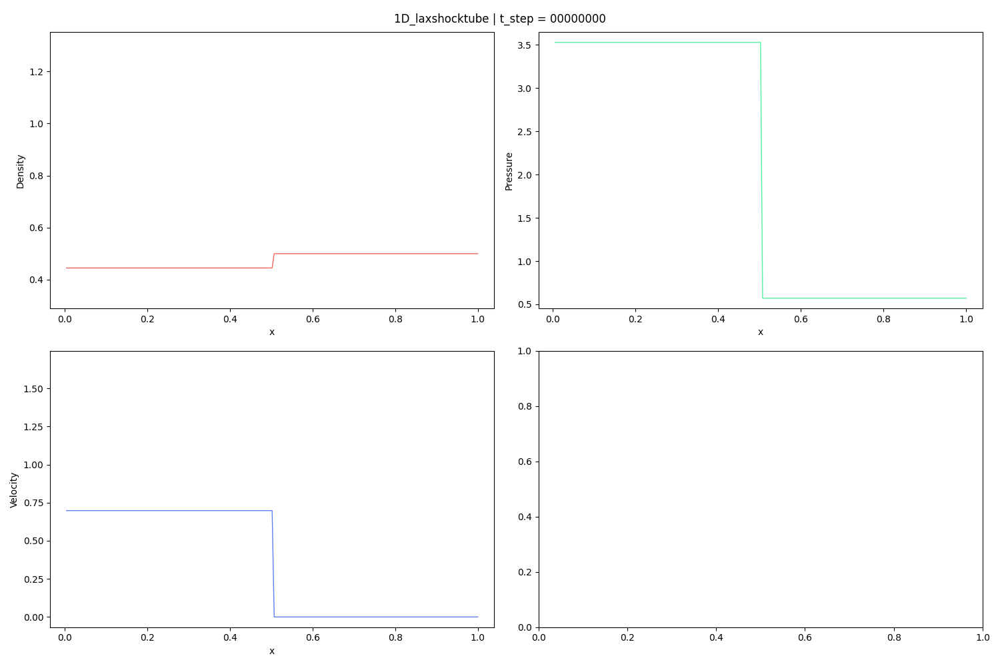
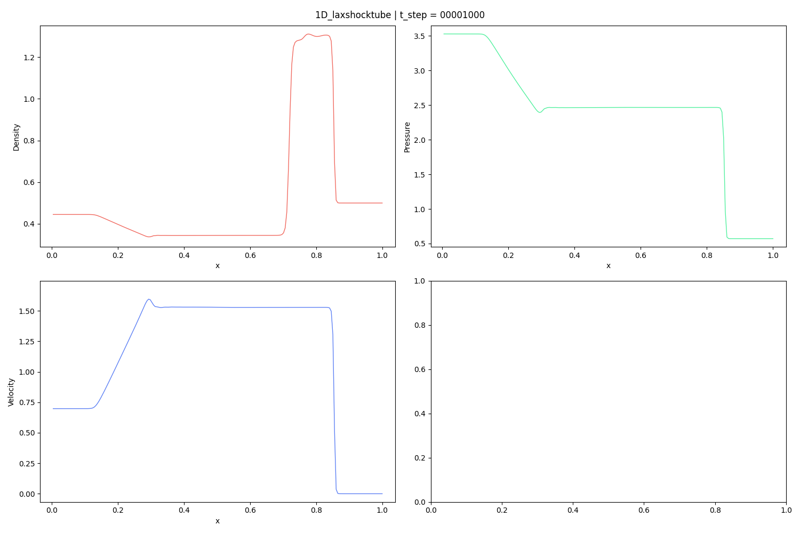
A circle of radius R = 1 turns at a prescribed rate (moving_ibm = 1) inside a fixed no-slip ring (an STL immersed boundary with inner radius 2 R). The gas (rho = 1, sound speed 1, constant viscosity) starts from rest and is run to steady state at tip Mach number 0.05 and Re = Omega R^2 / nu = 10. The steady incompressible solution is u_theta = A r + B / r, so the velocity profile, the torque on each wall and the wall speed are known exactly. The example measures what ib_wall_order = 1 (mirror ghost velocity, default) and ib_wall_order = 2 (two-probe quadratic) do at a curved, rotating wall.
check_couette.py reads the run directory (serial text output) and prints the errors:
python3 examples/2D_ibm_taylor_couette/check_couette.py examples/2D_ibm_taylor_couette [--tol X]
| cells per R | wall order | L2 / Omega R | azimuthal-mean part | inner torque error | outer torque error | wall speed error (fit) |
|---|---|---|---|---|---|---|
| 10 | 1 | 1.48e-2 | 1.31e-2 | -1.9e-2 | -3.2e-2 | -5.7e-2 |
| 10 | 2 | 1.36e-3 | 1.23e-3 | -2.7e-4 | -2.3e-3 | -7.4e-3 |
| 20 | 1 | 8.0e-3 | 7.7e-3 | -1.28e-2 | -1.90e-2 | -4.4e-2 |
| 20 | 2 | 3.3e-4 | 3.2e-4 | +7.6e-4 | -3.8e-4 | -2.2e-3 |
| 40 | 1 | 5.8e-3 | 6.3e-3 | -1.29e-2 | -1.56e-2 | -4.7e-2 |
| 40 | 2 | 9.6e-5 | 1.0e-4 | +1.4e-4 | -4.4e-5 | -7.2e-4 |
Order 2 converges at about second order (observed 2.0 and 1.8) and is 11 to 60 times below order 1, which converges at 0.5 to 0.9 order and keeps a 4 to 6 % wall-speed deficit. The wall shear from local near-wall fits stays near 2 % with order 2 and the default image points and viscous gradient; it is a near-wall discretization error, not compressibility (ref1d.py, a 1D compressible solution of the same case, changes the shear by about 3e-5 relative), and TSC image points with --visc_compact 1 bring it to 0.1 % at 40 cells per R. The measurement, its limits and the rotating-wall variants are on the page Wall-Normal Ghost Velocity at Viscous Walls.
./mfc.sh run examples/2D_ibm_taylor_couette/case.py -t pre_process simulation -n 1 -- --cells_per_R 20 --ntau 12 --wall_order 2 python3 examples/2D_ibm_taylor_couette/check_couette.py examples/2D_ibm_taylor_couette python3 examples/2D_ibm_taylor_couette/ref1d.py --mach 0.05 --re 10 --ntau 12 --N 200 # 1D compressible reference, about 1 min
case.py defaults to a CI-sized run (12 cells per radius, 64 x 64 cells, 300 fixed steps, far from steady state). Options: --cells_per_R, --wall_order, --ip_interp (1 inverse distance, 2 TSC), --visc_compact (compact viscous gradients next to a body), --mach, --re, --sign, --shift (grid shift in cells), --steps, --ntau (run this many slowest viscous times instead of --steps) and --stl. Each run writes into the example directory; remove D/, restart_data/ and the .inp files between runs. The output is serial text, so use one rank. ring_stl.py writes the ring STL (ring.stl is ring_stl.py ring.stl 2 5 512). The suite registers the CI-sized run as 2D -> IBM -> Taylor-Couette -> ib_wall_order=2 (a regression golden; the accuracy is what the checker measures).
2D only, two Mach numbers, one machine and compiler for the table (NVIDIA A100, NVHPC 25.11, double precision). The tables use master with #2383 (a rotating body's ghost-cell wall velocity at the wall point). The wall shear read from the near-wall cells does not converge with order 1, and stays near 1.3 to 2 % with order 2 and the default image points and gradient (Mach 0.01 and 0.05). Mean density rises by up to 2 % over the run because the immersed boundary does not conserve mass; this is not quantified here.
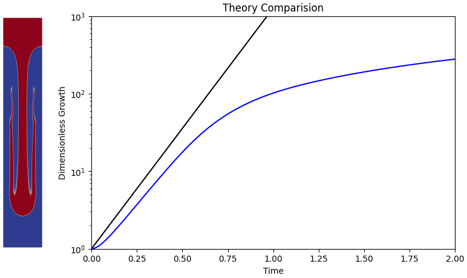
check_rt.py measures the cos(k x) amplitude of the interface (the light-fluid column height) at each save, fits a = A exp(n t) + B exp(-m t) over the saves with k a <= 0.25, and compares n with the growth rate of the linearized incompressible Navier-Stokes equations for the same density and viscosity profiles (a quadratic eigenproblem solved in the script; 6.507 1/s, against sqrt(A g k) = 12.41 1/s without viscosity).
./mfc.sh run examples/2D_rayleigh_taylor/case.py -t pre_process simulation post_process -n 1 --gpu --case-optimization -- -N 100 --tend 0.6 --saves 60 python3 examples/2D_rayleigh_taylor/check_rt.py examples/2D_rayleigh_taylor --case-args "-N 100 --tend 0.6 --saves 60"
case.py takes -N (cells per wavelength, default 200), --tend (default 2 s) and --saves (default 100). Measured:
| N | platform | n [1/s] | error |
|---|---|---|---|
| 32 | GNU 13.3 CPU, one rank | 6.4337 | -1.12 % |
| 32 | NVIDIA A100, NVHPC 25.11 | 6.4337 | -1.12 % |
| 64 | NVIDIA A100 | 6.4560 | -0.78 % |
| 100 | NVIDIA A100 | 6.4611 | -0.70 % |
The 32-cell CPU run takes 66 minutes; the 100-cell GPU run about 1.5 hours. On NVIDIA GPUs use --case-optimization (#2466). See Validation: Interface Instabilities.
mpp_lim is off: this case runs without it, and it breaks pressure equilibrium at material interfaces (see mpp_lim in Case Files).
The smooth Alfven wave of Tóth (2000, section 6.3.1): $\rho = 1$, $p = 0.1$, $\gamma = 5/3$, $B_x = 1$, $v_\perp = B_\perp = 0.1(\sin 2\pi x, \cos 2\pi x)$ in a periodic unit box (hcid = 150), HLLD. It is an exact nonlinear solution of ideal MHD: the wave travels at the Alfven speed $B_x/\sqrt{\rho} = 1$ in $-x$ with $\rho$, $p$ and $|B_\perp|$ constant, so at t = 1 the state equals the initial one.
check_alfven.py compares the last save of each run with the initial state shifted by $-t$ and prints the L1 errors of $v_y$, $v_z$, $B_y$, $B_z$, the largest deviation of $\rho$ and $p$, and the observed order of the $B_y$ error over a sweep.
./mfc.sh run examples/1D_mhd_smooth_alfven_wave/case.py -t pre_process simulation post_process -n 1 python3 examples/1D_mhd_smooth_alfven_wave/check_alfven.py examples/1D_mhd_smooth_alfven_wave
The default is the original deck (1024 cells, WENO3, dt = 1e-5, 100000 steps). case.py also takes -N (cells), --cfl (fast-wave CFL number, which sets dt to end exactly at t = 1) and --weno (weno_order); the sweep on Validation: Ideal MHD uses -N 32 ... 512 --cfl 0.4 with --weno 3 and --weno 5, one copy of the directory per run.
A disc of radius 0.3 centred at (0.48, 0.53) in the unit square holds gas at 1/1000 of the ambient density and pressure, so both regions have the same temperature. The ambient gas ( \(\rho = p = 1\), \(\gamma = 1.4\), at rest) rushes into the disc, converges on its centre at t ≈ 0.07 and rebounds as a strong shock. This is the 2D analogue of the blast-centre collapse of #2469: unlimited WENO5 sets a negative face pressure at the collapse and the sound speed becomes NaN. face_bound = 2 (the default here) scales each cell's face states toward the cell state only as far as positivity needs, which carries the run through.
Mapped WENO5, HLLC, SSP-RK3, fixed \(\Delta t\) at CFL 0.25 on |u| + c ≤ 8, extrapolation boundaries, -N = 128 cells per direction to --t-end = 0.12.
check_collapse.py reads every save (parallel_io = T) and prints the minimum density and pressure and the drift of total mass and energy. It passes when both minima are positive at every save and the drift stays below 1e-4. The limiter itself is conservative; the drift is the weak outer rarefaction leaving through the boundaries.
Results and limits: Validation: Positivity of Face States at a Near-Vacuum Collapse.
Reference:
V. A. Titarev, E. F. Toro, Finite-volume WENO schemes for three-dimensional conservation laws, Journal of Computational Physics 201 (1) (2004) 238–260.
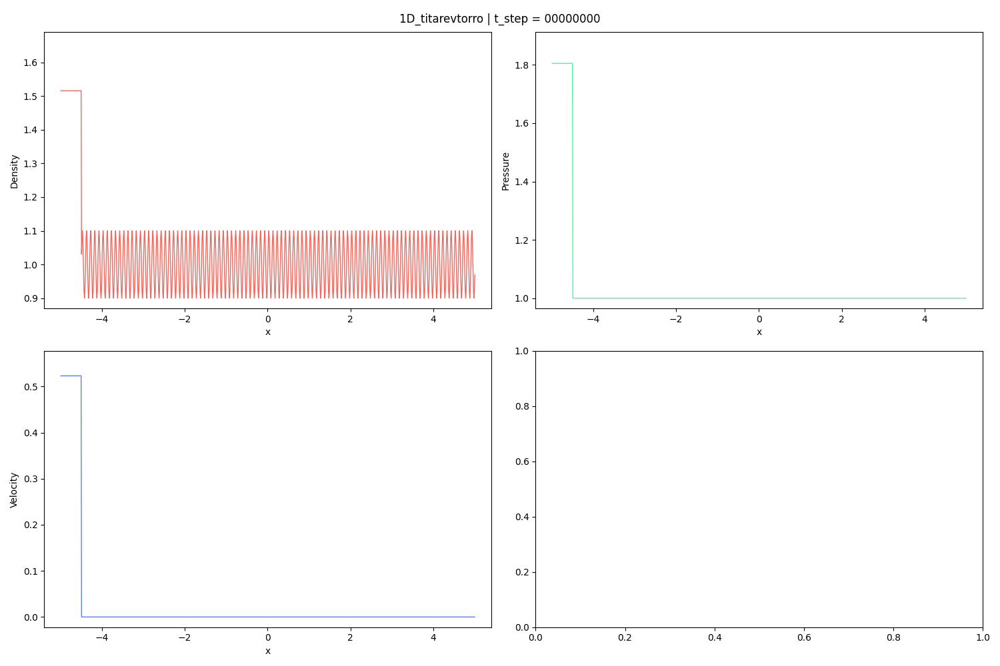
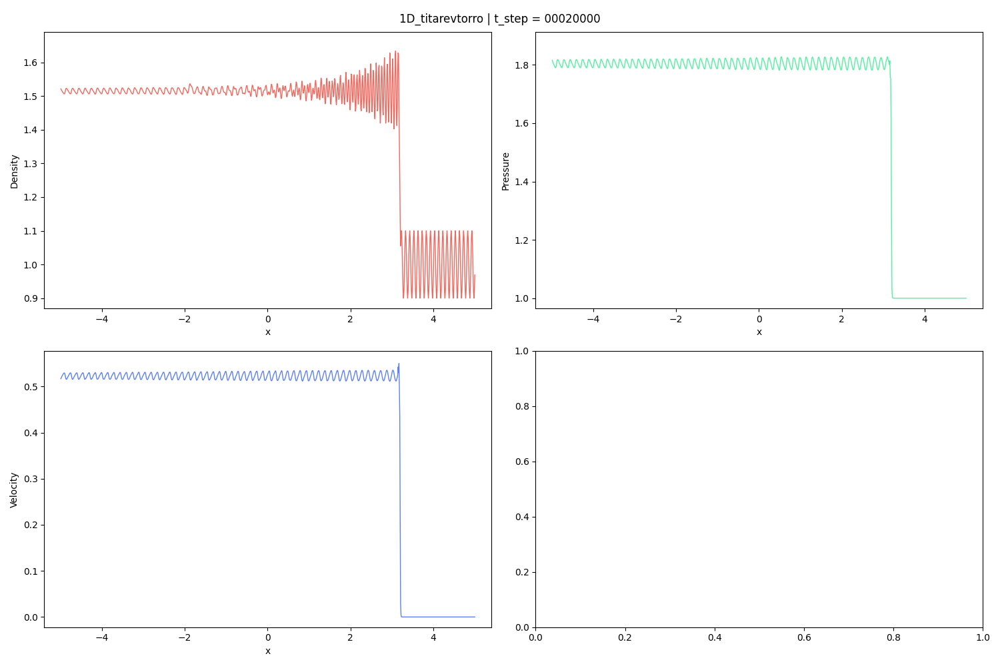
Axisymmetric twin of examples/1D_conduction_convergence. It verifies the radial part of div(k grad T) on a cylindrical grid, and in particular the axis cell k = 0, which has no face pair and is therefore the one cell fed by s_compute_conduction_axis_source.
Ideal gas, so T = p / ((Gamma - 1) * rho * cv). Setting
rho(r) = RHO0 / (1 + A (1 - r^2/R^2) + B (1 - r^4/R^4))
at uniform pressure gives exactly
T(r) = T0 (1 + A (1 - r^2/R^2) + B (1 - r^4/R^4)), T0 = P0 / ((Gamma - 1) RHO0 cv),
whose cylindrical Laplacian is finite on the axis:
(1/r) d/dr (r dT/dr) = -4 A T0 / R^2 - 16 B T0 r^2 / R^4.
At t = 0 the velocity is zero and the pressure is uniform, so every Euler flux and every cylindrical geometric source vanishes and the entire right-hand side is conduction:
d(rho E)/dt = k (1/r) d/dr (r dT/dr).
compare_analytic.py forms (rho E(dt) - rho E(0)) / dt from restart_data/lustre_{0,1}.dat and compares it to that expression.
B = 0 (the default) makes the exact answer a constant: every radial cell, axis included, must return the same number. That is the point of the profile — a sign error or a stray factor in the axis cell is unmissable against a flat field, where a sinusoid would hide it. B > 0 makes the answer vary with r and turns the same case into an ordinary convergence test.
src/pre_process/m_grid.f90 gives the axisymmetric grid a half-width cell at r = 0: cell 0 spans [0, h/2] with center h/4, and every cell above it has width h. Two cells therefore behave differently from the bulk:
# constant exact answer: the axis-cell check
for nr in 25 50 100 200 400; do
NR=$nr ./mfc.sh run examples/2D_axisym_conduction_convergence/case.py -n 1
NR=$nr ./build/venv/bin/python3 examples/2D_axisym_conduction_convergence/compare_analytic.py
done
# r-dependent exact answer: the second-order convergence table
for nr in 25 50 100 200; do
NR=$nr BAMP=0.4 ./mfc.sh run examples/2D_axisym_conduction_convergence/case.py -n 1
NR=$nr BAMP=0.4 ./build/venv/bin/python3 examples/2D_axisym_conduction_convergence/compare_analytic.py
done
Constant exact answer (B = 0, exact = -4.000000e-02 in every cell):
| NR | axis cell | axis rel err | cell 1 rel err | max bulk rel err |
|---|---|---|---|---|
| 25 | -4.00000033e-02 | -8.274e-08 | +3.125e-02 | 8.274e-08 |
| 50 | -4.00000033e-02 | -8.274e-08 | +3.125e-02 | 1.193e-06 |
| 100 | -4.00000033e-02 | -8.274e-08 | +3.125e-02 | 3.413e-06 |
| 200 | -4.00000033e-02 | -8.274e-08 | +3.125e-02 | 7.854e-06 |
| 400 | -3.99999589e-02 | +1.027e-06 | +3.125e-02 | 1.007e-05 |
The axis cell matches the interior to the O(dt) time-splitting floor at every resolution: for a quadratic profile the discretization is exact in space, so nothing else is left. Before the distance weighting was added the axis cell read -5.400e-02, 35% high and independent of NR, which is what this table is built to expose.
Second-order convergence (B = 0.4, r-dependent exact answer):
| NR | axis rel err | order | bulk L2 rel err | order |
|---|---|---|---|---|
| 25 | 1.171e-03 | – | 9.623e-04 | – |
| 50 | 2.856e-04 | 2.04 | 2.348e-04 | 2.03 |
| 100 | 7.062e-05 | 2.02 | 5.799e-05 | 2.02 |
| 200 | 1.757e-05 | 2.01 | 1.448e-05 | 2.00 |
The axis cell converges at the same second order as the bulk. Cell 1 sits at 1.19e-02 at every resolution, as expected from the shared face-gradient form described above.
ib_neighborhood_radius is a count of rank hops. A rank keeps an immersed-boundary patch only while the patch's centroid lies inside its own subdomain grown outward by that many hops (s_get_neighbor_bounds, f_neighborhood_ranks_own_location), and drops it otherwise. So the radius has to be large enough that the body is reachable within that many hops in every direction — and the hop that needs the most is the one stepping across the thinnest rank.
When the radius is not set in the case file, MFC chooses it from the body's half-extent divided by a rank width. The width it used was assembled the wrong way round:
Each rank reports its widest extent, and the minimum is taken over ranks. On a decomposition where every rank is long in one direction and thin in another, the reported width is the long one, the radius comes out too small, and ranks that should have kept the patch drop it.
A thin plate in a long, narrow channel: 20 chords by 8 by 6, with 400 x 50 x 50 cells chosen so MFC's topology search settles on 16 x 2 x 2 at 64 ranks. That is an ordinary shape for a wake, a jet or a channel — the flow direction resolved far more finely than the cross-stream ones — and it makes the ranks strongly anisotropic:
| direction | ranks | extent per rank |
|---|---|---|
| x | 16 | 1.250 |
| y | 2 | 4.000 |
| z | 2 | 3.000 |
The plate is 1.0 x 2.4 x 0.1, so s_get_ib_bound (geometry 9, the cuboid's half-diagonal) returns 1.3010. Crossing that at 1.250 per hop needs ceil(1.1 * 1.3010 / 1.250) = 2 hops. The old width of 4.000 gives ceil(1.1 * 1.3010 / 4.000) = 1.
and read the line MFC prints at start-up:
| printed radius | |
|---|---|
| before | 1 |
| after | 2 |
Both runs complete; the case is 1 M cells and takes a few minutes on two CPU nodes. SUMMARY=1 python3 case.py prints the half-extent, the rank extents and the arithmetic above without running anything.
The same two production grids that motivated the fix, measured from their own lustre_*_cb.dat:
| case | topology | old width | old radius | new width | new radius |
|---|---|---|---|---|---|
| gust encounter, 128 ranks | 16 x 2 x 4 | 2.051 | 1 | 1.052 | 2 |
| flapping wing, 128 ranks | 8 x 4 x 4 | 1.745 | 1 | 1.027 | 2 |
Both pick 1 where 2 is required.
The new width is never larger than the old one, so the chosen radius never decreases: the change can only make the neighbourhood more conservative, at the cost of more hops in the force reduction. Cases that set ib_neighborhood_radius explicitly are untouched, and so is any decomposition whose ranks are close to cubic, where the widest and narrowest extents coincide — which is why a uniform grid with a balanced topology shows no difference.
A quarter of a 2D water drop (r0 = 0.15 m, sigma = 8 N/m) in air at rest, with symmetry planes at x = 0 and y = 0, relaxes to equilibrium under surface tension (6-equation model with surface_tension). check_laplace.py averages the pressure inside and outside the drop over the last 20 % of the saves and compares the jump with sigma/R, R the equivalent radius of the water area, and prints the largest residual velocity (spurious currents).
./mfc.sh run examples/2D_laplace_pressure_jump/case.py -t pre_process simulation post_process -n 1 -- -N 50 python3 examples/2D_laplace_pressure_jump/check_laplace.py examples/2D_laplace_pressure_jump --case-args "-N 50"
case.py takes -N (cells per direction, default 50), --tend (0.5 s) and --saves (100). Measured with GNU 13.3 (CPU, one rank) and an NVIDIA A100 (NVHPC 25.11, --case-optimization):
| N | platform | dp [Pa] | vs sigma/R | max abs(u) [m/s] |
|---|---|---|---|---|
| 25 | CPU | 53.633 | +1.02 % | 0.053 |
| 50 | CPU | 53.279 | +0.010 % | 0.038 |
| 50 | A100 | 53.280 | +0.013 % | 0.037 |
| 100 | A100 | 53.185 | -0.25 % | 0.042 |
At 100 cells the jump still varies by 0.9 % over the averaging window. The residual velocity (spurious currents) is about 20 % of the capillary speed sqrt(sigma/(rho_l R)) = 0.23 m/s on every grid.
See Validation: Surface Tension.